Chapter 2: Semiconductor Memory: SRAM, DRAM, HBM & Modules¶
This chapter opens up the chips that hold a computer's working data. It starts with SRAM caches and the DRAM cell, then explains banks, rows and timings, the DDR4-DDR5-DDR6 generations, low-power LPDDR, graphics GDDR and the stacked HBM that powers AI accelerators. It then covers memory modules, controllers, channels and NUMA, error correction and Rowhammer, XMP/EXPO overclocking, the makers behind the 2025-2026 memory crunch, and how to test and diagnose memory.
2.1 SRAM Cells and On-Chip Caches¶
SRAM (static RAM) stores each bit in a tiny loop of transistors that holds its value as long as power is on — no refreshing needed. It is the fastest memory there is, but each bit needs about six transistors, so it is big and expensive. That is why SRAM is used for CPU and GPU caches, register files and microcontroller memory, not for gigabytes of main memory.
SRAM vs DRAM
| SRAM | DRAM | |
|---|---|---|
| Cell | 6 transistors (6T) | 1 transistor + 1 capacitor |
| Needs refresh | No | Yes, every 32-64 ms |
| Access time | ~0.5-10 ns (L1-L3) | ~15-50 ns in chip, ~100 ns system |
| Density | Low | ~10-20x higher |
| Where used | Caches, registers, MCUs | Main memory, HBM, GDDR |
| Made on | Logic process with the CPU | Dedicated DRAM process |
SRAM wins on speed, DRAM on density — which is why every computer uses both.
Think of it like…
SRAM is a light switch: flip it and it stays put instantly, but every switch needs its own wiring and box. DRAM is a bucket of water that slowly leaks: cheaper and smaller, but someone must keep topping it up.
Real-world example
Elena profiles a trading engine on a server whose 128 cores share hundreds of megabytes of L3 cache. By packing price data into a compact array that fits in L2 SRAM, she cuts the average lookup from about 90 ns (DRAM) to under 5 ns. The engine now handles twice as many orders per second without any new hardware.
How it works¶
- Two cross-coupled inverters (four transistors) hold a bit as either 1-0 or 0-1; two access transistors connect it to bitlines.
- To read, the wordline opens the access transistors and a sense amplifier detects which bitline dips.
- To write, strong drivers force the bitlines to the new value, flipping the latch.
- Thousands of cells form arrays; arrays form cache banks with tag arrays recording which memory lines they hold.
- The cache controller checks tags on every access: hit → data in a few cycles; miss → fetch the 64-byte line from the next level.
Who uses it
CPU, GPU and AI-chip architects, SRAM circuit and memory-compiler designers at foundries, embedded developers counting kilobytes, and performance engineers.
Key takeaway
Remember the trade-off in one line: SRAM = 6 transistors per bit, no refresh, ~1 ns, small and costly; DRAM = 1 transistor + 1 capacitor, refresh needed, ~15-50 ns inside the chip, dense and cheap.
Going deeper
- SRAM density has nearly stopped scaling: TSMC's high-density bit cell is about 0.021 µm² at both N5 and N3E, and N2 is reported at roughly 0.0175 µm², while logic keeps shrinking faster.
- Caches are set-associative: a 48 KiB, 12-way L1 with 64-byte lines has 64 sets; each memory line may live in any of the 12 ways of its set, chosen by low address bits.
- Coherence protocols such as MESI (Intel) and MOESI (AMD) keep every core's cached copy of a line consistent; a write by one core invalidates other cores' copies.
- AMD's 3D V-Cache bonds an extra SRAM die directly to the processor die using hybrid bonding, adding 64 MB of L3 that games and simulations benefit from.
- Large SRAM pools now define some AI accelerators: Cerebras's wafer-scale WSE-3 carries 44 GB of on-chip SRAM, trading capacity for enormous on-chip bandwidth.
- SRAM leakage current matters at idle, so mobile chips power-gate unused cache ways and keep SRAM at a minimum retention voltage during sleep.
Common mistakes & misconceptions
- Thinking 'static' means non-volatile: SRAM loses data when power is removed; 'static' only means no refresh is needed.
- Assuming bigger caches are free: more SRAM costs die area, power and often extra latency cycles.
- Ignoring data layout: a program striding across memory can miss in cache constantly even on a CPU with huge caches.
Try it: See your cache sizes, associativity and line size¶
# Linux (util-linux)
lscpu -C
# Example output columns: NAME ONE-SIZE ALL-SIZE WAYS TYPE LEVEL ... COHERENCY-SIZE
# Windows PowerShell
Get-CimInstance Win32_CacheMemory | Select-Object Purpose, InstalledSize, Associativity
Key memory types, devices, interfaces, standards & tools¶
| Name | What it does | Example |
|---|---|---|
| 6T SRAM cell Standard cell on every logic process · Component · Current · Intermediate |
Six transistors — two cross-coupled inverters plus two access transistors — holding one bit while powered. | A 32 MB L3 cache holds about 268 million bits, so over 1.6 billion transistors are just SRAM cells. |
| 8T and multi-port SRAM Register files, low-voltage caches · Component · Current · Advanced |
Cells with extra transistors giving separate read ports or more stable operation at low voltage. | A CPU's register file uses multi-ported cells so several instructions can read operands in the same cycle. |
| SRAM bit-cell area Foundry process disclosures (TSMC, Intel, Samsung) · Metric · Current · Advanced |
The silicon area of one SRAM bit, around 0.02 µm² at leading nodes; it now shrinks far slower than logic. | Chip designers move some cache onto separate stacked dies because SRAM barely shrank from 5 nm to 3 nm. |
| Set-associative cache CPU cache organisation · Concept · Current · Intermediate |
A cache divided into sets of several 'ways'; each memory line can live in any way of one set. | A 16-way L2 means 16 different lines with the same set index can be cached at once before eviction. |
| Write-back vs write-through Cache write policies · Concept · Current · Intermediate |
Write-back keeps modified data in cache until eviction; write-through also writes it to the next level immediately. | Most CPU data caches are write-back, so a loop updating one counter does not flood DRAM with writes. |
| Inclusive, exclusive and victim caches Intel and AMD cache hierarchies · Concept · Current · Advanced |
Policies deciding whether a lower cache also holds copies of upper-level lines or only lines evicted from them. | AMD's L3 acts mainly as a victim cache, filled with lines evicted from the cores' L2 caches. |
| Cache coherence (MESI / MOESI) Intel MESIF, AMD MOESI, Arm CHI · Protocol · Current · Advanced |
Rules tracking each cached line's state so all cores see a consistent view of memory. | When core 3 writes a shared variable, coherence invalidates the copies held by cores 0-2. |
| Hardware prefetcher Built into modern CPU cores · Component · Current · Intermediate |
Logic that spots access patterns and fetches upcoming lines into cache before the program asks for them. | Scanning a 1 GB array sequentially runs near memory bandwidth because prefetchers stay ahead of the loop. |
| Cache miss types (the three Cs) Mark Hill's classification · Concept · Intermediate |
Compulsory (first touch), capacity (working set too big) and conflict (too many lines map to one set) misses. | Tiling a matrix multiply into blocks that fit L2 removes most capacity misses and doubles speed. |
| AMD 3D V-Cache AMD with TSMC SoIC hybrid bonding · Technology · Current · Intermediate |
An extra SRAM die stacked on or under the CPU die, adding 64 MB of L3 per compute die. | The Ryzen 7 9800X3D's 96 MB of L3 makes it a popular gaming CPU because game data fits in cache. |
| GPU shared memory and register files NVIDIA streaming multiprocessors, AMD compute units · Component · Current · Advanced |
Software-managed on-chip SRAM per GPU core cluster, plus huge register files, feeding thousands of threads. | A CUDA kernel stages tiles of a matrix in shared memory so each value is fetched from HBM only once. |
| SRAM-heavy AI chips Cerebras WSE-3; Groq LPU · Product · Current · Advanced |
Accelerators that keep model weights in on-chip SRAM to avoid off-chip memory bandwidth limits. | Cerebras's WSE-3 wafer has 44 GB of SRAM; Groq's LPU chip has about 230 MB, so models span many chips. |
| Microcontroller SRAM Raspberry Pi RP2040/RP2350, STM32, ESP32 · Component · Current · Beginner |
Small on-chip SRAM, from kilobytes to a few megabytes, serving as the whole main memory of embedded devices. | The RP2350 in a Raspberry Pi Pico 2 has 520 KB of SRAM — enough for a sensor hub's code and buffers. |
| Standalone SRAM chips Infineon (Cypress), Renesas, ISSI · Product · Current · Intermediate |
Separate SRAM packages for networking, industrial and aerospace systems needing deterministic low latency. | A network switch uses QDR SRAM chips to look up packet-forwarding tables at line rate. |
2.2 Inside DRAM: The Cell, Sense Amplifiers and Refresh¶
DRAM stores each bit as a little electric charge in a microscopic capacitor guarded by one transistor. The charge leaks away within milliseconds, so the chip must constantly read and rewrite every row — this is refresh. Reading is destructive too: sensing a row drains it, so the chip writes it straight back.

Think of it like…
Each DRAM cell is a tiny leaky bucket. A full bucket means 1, empty means 0, and a team of attendants (refresh) walks the rows topping up every bucket before too much water drips out.
Real-world example
Jun's 32 GB DDR5 kit contains sixteen 16 Gb chips. Every 3.9 µs the memory controller issues a refresh command, and over each 32 ms window every row in every bank is refreshed. When his PC sleeps, the controller hands refresh to the chips themselves (self-refresh), so the RAM keeps its contents on a trickle of power.
How it works¶
- A wordline turns on the access transistors of one row, connecting each capacitor to its bitline.
- Each tiny charge nudges its bitline voltage slightly up or down; a sense amplifier amplifies the difference to a full 1 or 0.
- The whole row (one 'page', e.g. 1 KB per chip) now sits in the sense amplifiers — the row buffer — and is written back to the cells.
- Columns are read or written from the row buffer; then the row is closed (precharged).
- Refresh repeats activate-and-restore for every row within the retention window (32 ms for DDR5, 64 ms for DDR4).
Who uses it
DRAM design and process engineers at memory makers, memory-controller designers, firmware engineers tuning refresh, and reliability engineers.
Key takeaway
Memorise refresh numbers: DDR4 refreshes every row within 64 ms (tREFI 7.8 µs), DDR5 within 32 ms (tREFI 3.9 µs), and both halve the interval above 85 °C.
Going deeper
- A modern DRAM capacitor is a tall, narrow cylinder with an aspect ratio of roughly 50:1 or more, storing only a few femtofarads; making it taller is one of the hardest parts of each node shrink.
- Cells are laid out at about 6F² each (F = feature size) with buried-channel access transistors; the industry studies 4F² vertical-channel transistors and true 3D-stacked DRAM for the 2030s.
- Refresh cost grows with density: tRFC is about 295 ns for a 16 Gb DDR5 die and about 410 ns for 32 Gb, so a bank is unavailable for roughly 7-10% of the time under all-bank refresh.
- DDR5 adds same-bank refresh (REFsb), refreshing one bank per bank group while others keep serving requests, which reduces the performance penalty of refresh.
- Retention varies cell by cell and even over time (variable retention time); the refresh interval is set for the weakest cells at the hottest allowed temperature, wasting energy on the strong ones.
- DRAM nodes are named 1x, 1y, 1z, 1α, 1β, 1γ (1a, 1b, 1c): all '10 nm class'; EUV lithography entered DRAM at Samsung's 1z/1α and SK hynix's 1α, and Micron adopted it for 1γ in 2025.
Common mistakes & misconceptions
- Thinking DRAM is cleared at power-off instantly: cells decay over seconds, which cold-boot attacks exploit.
- Believing refresh is free: it costs bandwidth, latency and power, especially in high-density, hot server memory.
- Assuming smaller nodes always make better DRAM: tinier capacitors leak more and suffer stronger disturbance effects like Rowhammer.
Try it: Calculate how much time DRAM spends refreshing¶
trefi_ns = 3900 # DDR5 refresh interval
trfc_ns = 295 # DDR5 16 Gb all-bank refresh time
print(f"Bank busy refreshing: {trfc_ns/trefi_ns:.1%} of the time")
print(f"Refresh commands per 32 ms: {32e6/trefi_ns:,.0f}")
Key memory types, devices, interfaces, standards & tools¶
| Name | What it does | Example |
|---|---|---|
| 1T1C cell structure All commodity DRAM · Component · Current · Intermediate |
One access transistor and one storage capacitor per bit, connected to a wordline and a bitline. | A 32 Gb DDR5 die holds about 34 billion such cells plus spare rows and columns. |
| Storage capacitor DRAM process technology · Component · Current · Advanced |
A tall cylinder that holds a few femtofarads of charge; its height and dielectric decide how long data lasts. | Process engineers add high-k dielectric layers so a shrinking capacitor still holds enough charge to be sensed. |
| Wordline and bitline DRAM array architecture · Concept · Intermediate |
Wordlines select a row of cells; bitlines carry each cell's charge to the sense amplifiers. | Activating one wordline in an 8 Gb bank connects thousands of cells to their bitlines at once. |
| Sense amplifier DRAM array periphery · Component · Current · Intermediate |
A latch-type amplifier that turns a bitline's tiny voltage shift into a full 0 or 1 and writes it back. | The row buffer of a DDR5 x8 chip is a row of sense amplifiers holding 1 KB of data. |
| Destructive read and restore DRAM operation · Concept · Intermediate |
Sensing drains the capacitors, so every activated row is rewritten from the sense amplifiers before closing. | Each ACT command both reads and refreshes the whole row, which is how refresh works internally. |
| Retention window (tREFW) and interval (tREFI) JEDEC DDR4 / DDR5 standards · Metric · Current · Intermediate |
All rows must be refreshed within tREFW (64 ms DDR4, 32 ms DDR5); one REF is issued every tREFI. | DDR4 issues 8,192 refresh commands per 64 ms, one every 7.8 µs. |
| tRFC (refresh cycle time) JEDEC; grows with die density · Metric · Current · Advanced |
How long a refresh command blocks the bank or chip; longer on higher-density dies. | Overclockers lower tRFC from the default to gain a few percent of bandwidth on DDR5. |
| All-bank vs same-bank refresh DDR5 REFab and REFsb commands · Concept · Current · Advanced |
Refreshing every bank at once, or one bank per bank group so others keep working. | A database server's memory controller uses same-bank refresh to smooth latency spikes. |
| Temperature-controlled refresh JEDEC extended temperature range · Concept · Current · Intermediate |
Above 85 °C, cells leak faster, so the refresh rate doubles to keep data safe. | A poorly cooled server's DIMMs crossing 85 °C lose a little bandwidth to doubled refresh. |
| Self-refresh and partial-array self-refresh JEDEC DDR and LPDDR low-power modes · Concept · Current · Intermediate |
Chips refresh themselves while the controller sleeps; LPDDR can skip unused regions to save more power. | A phone in standby keeps only the needed parts of its LPDDR5X refreshed to stretch battery life. |
| Variable retention time (VRT) DRAM reliability research · Concept · Advanced |
Some cells randomly switch between long and short retention times, complicating refresh optimisation. | Research schemes that refresh strong rows less often must still guard against cells that suddenly weaken. |
| DRAM process nodes (1α, 1β, 1γ) Samsung, SK hynix, Micron · Technology · Current · Intermediate |
Successive '10 nm-class' DRAM generations, each shrinking cells for more bits per wafer. | Micron began sampling 1γ DDR5 in 2025, its first DRAM node using EUV lithography. |
| EUV lithography in DRAM ASML EUV scanners · Technology · Current · Advanced |
Extreme-ultraviolet printing of the finest DRAM layers, replacing complex multi-patterning steps. | Samsung and SK hynix use EUV on several critical layers of their latest DDR5 and HBM dies. |
| 3D DRAM and 4F² cells Research and development at major DRAM makers · Technology · Emerging · Advanced |
Future designs with vertical transistors or stacked cell layers to keep density rising after planar scaling. | Memory makers have shown 4F² vertical-channel prototypes as candidates for DRAM generations after 1γ. |
2.3 Banks, Rows, Columns and Timings (CL-tRCD-tRP-tRAS)¶
A DRAM chip is divided into banks; each bank is a grid of rows and columns. To read data, the controller opens a row, waits, reads a column, and later closes the row. The waits are the timings printed on memory kits, like 30-36-36-76: they are counted in clock cycles, so real latency depends on both timings and speed.

Think of it like…
A bank is a library aisle of shelves (rows). The librarian must pull a whole shelf onto the counter (activate), find your book on it (column read), and put the shelf back (precharge) before fetching another shelf from the same aisle.
Real-world example
Kai compares two kits: DDR4-3200 CL16 and DDR5-6000 CL30. Using latency = CL × 2,000 ÷ MT/s, both give 10 ns of CAS latency, but the DDR5 kit moves nearly twice the data per second. He picks the DDR5 kit; for his workload the extra bandwidth matters far more than the identical first-word latency.
How it works¶
- ACTIVATE (ACT): open a row in a bank, copying it into the row buffer — wait tRCD.
- READ or WRITE a column from the open row — data appears CL cycles after a read.
- More reads to the same open row (row hits) need only CL each time.
- PRECHARGE (PRE): close the row after at least tRAS from activation — wait tRP before the next ACT in that bank.
- Spread requests across many banks and bank groups so their waits overlap.
Who uses it
Memory-controller and firmware engineers, PC enthusiasts and overclockers, performance engineers, and anyone reading a memory kit's label.
Key takeaway
First-word latency (ns) = CL × 2,000 ÷ data rate in MT/s; DDR5-6000 CL30 and DDR4-3200 CL16 are both 10 ns.
Going deeper
- The four headline numbers are CL (read to data), tRCD (activate to read/write), tRP (precharge to next activate) and tRAS (minimum activate to precharge); tRC = tRAS + tRP is the fastest one bank can cycle rows.
- DDR5 chips (16 Gb, x4/x8) have 32 banks in 8 bank groups versus DDR4's 16 banks in 4 groups; accesses to different bank groups can follow each other faster (tCCD_S) than within one group (tCCD_L).
- tRRD and tFAW limit how quickly rows can be activated across banks — at most four activates in any tFAW window — mainly to cap the chip's peak current.
- DDR5 uses a burst length of 16 on each 32-bit subchannel, so one burst delivers exactly one 64-byte cache line; DDR4 used BL8 on a 64-bit channel for the same result.
- JEDEC speed bins define standard timings: DDR5-4800B runs CL40 (about 16.7 ns), while enthusiast DDR5-6000 kits commonly run CL30-CL36 at higher voltage.
- Real loaded latency is far more than CL: a CPU's end-to-end DRAM access, including cache misses, the on-chip fabric and controller queues, is typically 70-120 ns.
Common mistakes & misconceptions
- Comparing CL numbers across generations: CL40 at DDR5-6400 (12.5 ns) is faster than CL22 at DDR4-3200 (13.75 ns).
- Ignoring the other timings: tRCD, tRP and tRFC often matter as much as CL for real workloads.
- Assuming lower latency always beats more bandwidth: streaming workloads and integrated GPUs usually prefer bandwidth.
Try it: Convert memory timings into nanoseconds¶
def ns(cycles, mts):
return cycles * 2000 / mts # clock = MT/s / 2
for name, mts, cl, trcd in [('DDR4-3200 CL16', 3200, 16, 18),
('DDR5-4800 CL40', 4800, 40, 40),
('DDR5-6000 CL30', 6000, 30, 36)]:
print(f"{name}: CL {ns(cl, mts):.1f} ns, row miss ~{ns(cl+trcd, mts):.1f} ns")
Key memory types, devices, interfaces, standards & tools¶
| Name | What it does | Example |
|---|---|---|
| Bank and bank group JEDEC DDR4 / DDR5 · Concept · Current · Intermediate |
Independent arrays inside a chip that can each have one row open; bank groups share some internal circuits. | A DDR5 x8 chip's 32 banks let the controller overlap up to 32 row operations. |
| Row (DRAM page) and row buffer DRAM array organisation · Concept · Current · Intermediate |
A row is opened into the sense amplifiers (row buffer), typically 1-2 KB per chip; later reads to it are fast. | Streaming through an array produces many row hits because consecutive lines sit in the same open row. |
| Column access DRAM READ / WRITE commands · Concept · Current · Intermediate |
Selecting a chunk of the open row and bursting it out over the data pins. | One DDR5 READ on a subchannel returns 64 bytes over 16 transfers of 32 bits. |
| Device width (x4, x8, x16) JEDEC DRAM organisations · Concept · Current · Intermediate |
How many data pins a chip has; it decides how many chips form a rank. | A non-ECC DDR5 UDIMM rank uses eight x8 chips; a server RDIMM rank may use x4 chips for stronger ECC. |
| Row hit, miss and conflict Memory-controller behaviour · Concept · Advanced |
Hit = row already open; miss = bank idle, needs ACT; conflict = another row open, needs PRE then ACT. | A random-access hash table causes mostly row conflicts, roughly doubling DRAM latency versus row hits. |
| DRAM commands (ACT, RD, WR, PRE, REF) JEDEC DDR command set · Protocol · Current · Advanced |
The basic instructions a controller sends: activate a row, read, write, precharge (close) and refresh. | A logic analyser on a DDR5 bus shows sequences like ACT-RD-RD-PRE between periodic REF commands. |
| CAS latency (CL) JEDEC timing parameter · Metric · Current · Beginner |
Clock cycles between a READ command and the first data — the first number on a memory kit's label. | A DDR5-6000 CL30 kit delivers first data 10 ns after the READ command. |
| tRCD JEDEC timing parameter · Metric · Current · Intermediate |
Row-to-column delay: cycles between ACTIVATE and the first READ or WRITE to that row. | In the kit label 30-36-36-76, tRCD is 36 cycles, 12 ns at DDR5-6000. |
| tRP JEDEC timing parameter · Metric · Current · Intermediate |
Row precharge time: cycles to close an open row before another row in that bank can be opened. | A row conflict costs tRP + tRCD + CL — about 34 ns on a 30-36-36 DDR5-6000 kit. |
| tRAS and tRC JEDEC timing parameters · Metric · Current · Advanced |
tRAS is the minimum time a row stays open; tRC = tRAS + tRP is the minimum time between activates in one bank. | With tRAS 76 and tRP 36 at DDR5-6000, one bank can open a new row only every 37 ns. |
| tRRD and tFAW JEDEC timing parameters · Metric · Current · Advanced |
Minimum gap between activates to different banks, and the window allowing at most four activates. | Workloads activating many rows quickly can be throttled by tFAW even when banks are free. |
| Burst length (BL8 / BL16) DDR4 BL8; DDR5 BL16 · Concept · Current · Intermediate |
Number of consecutive transfers per read or write; DDR5's BL16 fills a 64-byte line from a 32-bit subchannel. | Each DDR5 subchannel delivers a full cache line in one 16-beat burst. |
| Command rate (1T / 2T) Memory-controller setting · Metric · Current · Advanced |
How many clock cycles a command occupies on the bus; 2T is more stable with many modules, 1T slightly faster. | A four-DIMM desktop runs 2T command rate so the heavily loaded bus stays stable. |
| JEDEC speed bin JEDEC JESD79-4 / JESD79-5 · Standard · Current · Intermediate |
Standard combinations of data rate and timings that every compliant chip must meet, e.g. DDR5-4800B at CL40. | Server RDIMMs run at JEDEC bins such as DDR5-6400 for guaranteed stability across vendors. |
2.4 DDR4, DDR5 and the Road to DDR6¶
DDR (double data rate) memory is the standard main memory of PCs and servers, moving data on both edges of the clock. Each generation — DDR, DDR2, DDR3, DDR4, DDR5 — raised speed and capacity while lowering voltage. In 2026 DDR5 is the mainstream, DDR4 is being phased out, and DDR6 is still being standardised.
Think of it like…
Each DDR generation is like widening and speeding up a motorway while using less fuel per car: DDR5 also split each lane into two independent carriageways so more journeys happen at once.
Real-world example
An IT team at the fictional Lakeside College refreshes its lab PCs. The old DDR4-3200 machines peak at 51.2 GB/s with dual-channel memory; the new DDR5-5600 PCs peak at 89.6 GB/s. The DDR4 modules cannot be reused because DDR5 DIMMs have a different notch, 1.1 V signalling and an on-module power chip.
How it works¶
- Check the CPU and motherboard: each platform supports exactly one desktop DDR generation (e.g. AM5 and LGA1851 are DDR5-only).
- Match the module type (UDIMM, SODIMM, RDIMM) and capacity per stick to the board.
- Run at the JEDEC speed the CPU officially supports, or enable an XMP/EXPO profile for rated overclocked speeds.
- Populate channels evenly so memory interleaves across all of them.
- Watch for DDR6 platforms later in the decade; they will need new CPUs, boards and modules.
Who uses it
PC builders and technicians, server engineers, OEM product planners, and CompTIA A+ and hardware students.
Key takeaway
Remember DDR5's headline changes: two 32-bit subchannels per DIMM, BL16, on-module PMIC, on-die ECC, 1.1 V, and JEDEC speeds from 4800 up to 8800 MT/s.
Going deeper
- DDR4 (JESD79-4, 2012) runs at 1.2 V with JEDEC bins from 1600 to 3200 MT/s, 16 banks in 4 bank groups and an 8n prefetch on one 64-bit channel per DIMM (72-bit with ECC).
- DDR5 (JESD79-5, July 2020; first PCs in late 2021) splits each DIMM into two independent 32-bit subchannels (40-bit with ECC), doubles burst length to 16 and bank groups to 8.
- DDR5 moves voltage regulation onto the module with a PMIC, adds an SPD hub with a temperature sensor, decision-feedback equalisation on receivers and on-die ECC inside every chip.
- Non-binary 24 Gb DDR5 dies created 24 GB and 48 GB modules, and 32 Gb dies enable 64 GB desktop UDIMMs and 128 GB-plus server RDIMMs without stacking.
- Samsung, SK hynix and Micron announced end-of-life for most DDR4 during 2025; as production wound down, DDR4 prices briefly rose above DDR5 for some parts.
- DDR6 drafts reportedly split each module into four 24-bit subchannels, starting near 8,800 MT/s and targeting up to 17,600 MT/s; most reports in 2026 expect first platforms in 2027 or later.
Common mistakes & misconceptions
- Forcing a DDR4 stick into a DDR5 slot: the key notch is in a different place, and the electrical designs are incompatible.
- Believing DDR5 always beats DDR4: early DDR5-4800 at CL40 could lose to tuned DDR4-3600 CL16 in latency-bound games.
- Treating 'DDR6 is out' rumours as fact: check JEDEC publication and real CPU platform support before planning purchases.
Try it: Identify installed memory type, speed and slots¶
# Windows PowerShell (SMBIOSMemoryType 26 = DDR4, 34 = DDR5)
Get-CimInstance Win32_PhysicalMemory |
Select-Object BankLabel, Capacity, Speed, ConfiguredClockSpeed, SMBIOSMemoryType, PartNumber
# Linux (root)
sudo dmidecode -t memory | grep -E 'Size|Type:|Speed|Locator|Part Number'
Key memory types, devices, interfaces, standards & tools¶
| Name | What it does | Example |
|---|---|---|
| DDR4 SDRAM JEDEC JESD79-4 (2012) · Standard · Legacy · Beginner |
The previous mainstream PC and server memory: 1.2 V, 1600-3200 MT/s, one 64-bit channel per DIMM. | Millions of office PCs from 2015-2022 still run fine on 8-32 GB of DDR4-2666 or DDR4-3200. |
| DDR5 SDRAM JEDEC JESD79-5 family (2020 onward) · Standard · Current · Beginner |
Today's mainstream main memory: 1.1 V, JEDEC speeds 4800-8800 MT/s, two subchannels per DIMM. | A 2026 desktop pairs a Ryzen 9000 or Core Ultra 200S CPU with 32 GB of DDR5-6000. |
| DDR5 subchannels JEDEC JESD79-5 · Concept · Current · Intermediate |
Each DDR5 DIMM has two independent 32-bit channels, letting the controller run two different accesses at once. | A 'dual-channel' DDR5 desktop really has four 32-bit subchannels working in parallel. |
| On-module PMIC JEDEC JESD301 family; Renesas, Richtek, MPS and others · Component · Current · Intermediate |
A power-management chip on each DDR5 module that converts 5 V (client) or 12 V (server) into the DRAM's supply voltages. | A DDR5 RDIMM fails to power up after its PMIC is damaged — a failure mode DDR4 modules never had. |
| SPD5 hub and thermal sensor JEDEC JESD300 family · Component · Current · Intermediate |
A DDR5 module's sideband chip holding its configuration EEPROM and reporting temperature to the system. | HWiNFO shows each DDR5 stick's temperature, read from its SPD hub sensor. |
| Decision-feedback equalisation (DFE) DDR5 receivers · Technology · Current · Advanced |
Circuitry that cancels signal distortion from previous bits so DDR5 can run at much higher speeds. | DFE lets DDR5 data pins run above 6,400 MT/s across a motherboard where DDR4 topped out lower. |
| DDR5 die densities (16, 24, 32 Gb) Samsung, SK hynix, Micron · Concept · Current · Intermediate |
Capacities of individual DDR5 chips; 24 Gb dies introduced non-binary module sizes like 24 GB and 48 GB. | A 2 × 48 GB DDR5 kit gives a workstation 96 GB using 24 Gb dies. |
| DDR5 speed bins to 8800 MT/s JEDEC JESD79-5 revisions · Standard · Current · Intermediate |
The JEDEC-standard data rates for DDR5, extended over time from 4800 up to 8800 MT/s. | Server CPUs launched in 2024-2026 officially support DDR5-6400 RDIMMs, with faster MRDIMMs on top platforms. |
| Prefetch and burst evolution DDR 2n → DDR2 4n → DDR3/DDR4 8n → DDR5 16n · Concept · Advanced |
Each generation fetches more bits per internal access so the slow core array can feed a faster interface. | DDR5's 16n burst lets an internal array running around 400 MHz deliver 6,400 MT/s on the pins. |
| Voltage evolution JEDEC DDR standards · Metric · Beginner |
Supply voltage fell from 2.5 V (DDR) to 1.8, 1.5, 1.2 and 1.1 V (DDR5), cutting power per bit. | Data centres saved megawatts as fleets moved from DDR3 at 1.5 V to DDR4 at 1.2 V. |
| DDR4 end-of-life Big three DRAM makers, 2025 · Concept · Legacy · Intermediate |
Major makers wound down DDR4 production to free capacity for DDR5, HBM and LPDDR5X. | Industrial PC makers stockpiled DDR4 in 2025 to support products with long lifetimes. |
| DDR3 SDRAM JEDEC JESD79-3 (2007) · Standard · Legacy · Beginner |
The 1.5 V (1.35 V for DDR3L) generation of 2007-2015, still found in older PCs and embedded boards. | A technician upgrading a 2012 laptop must buy DDR3L SODIMMs; DDR4 will not fit. |
| DDR6 SDRAM JEDEC (in development in 2026) · Standard · Emerging · Intermediate |
The next main-memory generation, reportedly with four subchannels per module and targets up to 17,600 MT/s. | Planners at a cloud provider expect DDR6 servers no earlier than 2027-2028 and budget DDR5 until then. |
2.5 Low-Power DRAM: LPDDR5X and LPDDR6¶
LPDDR (low-power DDR) is DRAM designed for phones, tablets, thin laptops and now some AI systems. It sits very close to — or on top of — the processor, uses lower voltages and aggressive sleep modes, and is usually soldered rather than socketed. LPDDR5X is the 2026 mainstream; LPDDR6, standardised in July 2025, is arriving in first devices.
LPDDR5X vs LPDDR6
| LPDDR5X | LPDDR6 | |
|---|---|---|
| JEDEC standard | JESD209-5 family | JESD209-6 (July 2025) |
| Channel width | 16-bit channels | 24-bit = 2 × 12-bit subchannels |
| Data rate | up to ~10,667 MT/s | 10,667 at launch → 14,400 target |
| Status in 2026 | Mainstream in phones, laptops | First devices, ramping |
| Typical use | Phones, AI PCs, Grace CPU | Next flagships, AI edge |
LPDDR6 widens each channel and keeps raising speed; first products began to appear in 2026.
Think of it like…
If DDR is a city bus that runs all day, LPDDR is an electric scooter: light and frugal, sprinting when needed and switching itself off at every stop.
Real-world example
A fictional phone maker, Orbit, designs its 2026 flagship with 16 GB of LPDDR5X-10667 stacked directly on top of the processor. Moving to LPDDR6 for the next model would raise bandwidth further within a similar power budget, but Orbit's engineers must wait for LPDDR6 parts in volume and for a processor whose memory controller supports the new 24-bit channels.
How it works¶
- The SoC's memory controller drives several narrow 16-bit (LPDDR5X) or 24-bit (LPDDR6) channels.
- LPDDR dies are packaged together and placed on top of the SoC (package-on-package) or right beside it.
- Frequency and voltage scale constantly with load (DVFS) to save energy.
- Idle banks and channels drop into power-down and deep-sleep modes; self-refresh keeps contents during standby.
- Laptops and servers can also use LPDDR on replaceable modules: LPCAMM2 and SOCAMM2.
Who uses it
Mobile SoC and laptop designers, Android/iOS performance engineers, embedded and automotive engineers, and AI-system architects building unified-memory machines.
Key takeaway
Key numbers: LPDDR5X has been pushed to 10,667 MT/s; LPDDR6 (JESD209-6, July 2025) starts around 10,667 MT/s on wider 24-bit channels and targets 14,400 MT/s.
Going deeper
- LPDDR5 (JESD209-5, 2019) reached 6,400 MT/s; LPDDR5X extended it to 8,533 and then, via vendor extensions such as Samsung's 10.7 Gbps parts, to about 10,667 MT/s.
- LPDDR6 uses 24-bit channels split into two 12-bit subchannels, so bandwidth rises both from speed and from width; JEDEC also highlighted efficiency modes and reliability and security features.
- Trade reports say China's CXMT began LPDDR6 mass production in 2026 for a Xiaomi phone, while Samsung and SK hynix showed LPDDR6 parts at CES and ISSCC 2026; treat early claims cautiously.
- Wide LPDDR buses make 'unified memory' AI computers possible: AMD's Ryzen AI Max+ 395 uses a 256-bit LPDDR5X-8000 bus (256 GB/s) and NVIDIA's DGX Spark has 128 GB of LPDDR5X at about 273 GB/s.
- NVIDIA's Grace CPU uses LPDDR5X with ECC for server memory, trading some capacity and serviceability for much better bandwidth per watt than DDR5 RDIMMs.
- Because LPDDR is soldered or stacked, a phone's or ultrabook's memory cannot be upgraded later — buyers must choose capacity at purchase.
Common mistakes & misconceptions
- Assuming LPDDR is slower than DDR because it is 'low power': per pin, LPDDR5X runs faster than most DDR5.
- Expecting to upgrade a thin laptop's RAM: most use soldered LPDDR unless they have an LPCAMM2 module.
- Comparing phone RAM by GB alone: memory speed, channel count and OS memory management matter too.
Try it: Compute peak bandwidth of an LPDDR memory system¶
def gbs(bus_bits, mts):
return bus_bits / 8 * mts / 1000
print('Phone, 64-bit LPDDR5X-10667 :', gbs(64, 10667), 'GB/s')
print('AI PC, 256-bit LPDDR5X-8000 :', gbs(256, 8000), 'GB/s')
print('M4 Max, 512-bit LPDDR5X-8533 :', round(gbs(512, 8533)), 'GB/s')
Key memory types, devices, interfaces, standards & tools¶
| Name | What it does | Example |
|---|---|---|
| LPDDR5 JEDEC JESD209-5 (2019) · Standard · Current · Intermediate |
Low-power DRAM standard reaching 6,400 MT/s, used in phones and laptops from 2020. | Many 2021-2023 Android flagships shipped with 8-12 GB of LPDDR5-6400. |
| LPDDR5X JEDEC JESD209-5 family; Samsung, SK hynix, Micron, CXMT · Standard · Current · Intermediate |
Faster LPDDR5 extension, 8,533 MT/s and up to about 10,667 MT/s, the 2026 mobile and AI-PC mainstream. | A 2026 flagship phone ships 16 GB of LPDDR5X-10667 stacked on its processor. |
| LPDDR5T SK hynix (2023) · Product · Legacy · Advanced |
SK hynix's 'Turbo' LPDDR5X variant at 9,600 MT/s, an early step beyond the base LPDDR5X speed. | Some 2024 Android flagships used LPDDR5T to advertise faster on-device AI. |
| LPDDR6 JEDEC JESD209-6 (July 2025) · Standard · Emerging · Intermediate |
Next-generation low-power DRAM with 24-bit channels, starting around 10,667 MT/s and targeting 14,400 MT/s. | Reports in 2026 named a Xiaomi foldable as an early phone shipping with LPDDR6 from CXMT. |
| LPDDR6 channel architecture JEDEC JESD209-6 · Concept · Emerging · Advanced |
Each 24-bit channel splits into two 12-bit subchannels, allowing more parallel accesses with fine-grained power control. | An SoC with four LPDDR6 channels drives a 96-bit-wide memory interface. |
| Package-on-package (PoP) Mobile SoC packaging · Technology · Current · Intermediate |
Stacking the DRAM package directly on top of the processor package to shorten wires and save board space. | Teardowns of iPhones show the LPDDR package soldered right on top of the A-series processor. |
| Dynamic voltage and frequency scaling LPDDR controllers and DRAM · Concept · Current · Intermediate |
Changing memory speed and voltage on the fly to match load, saving energy when demand is low. | Reading an e-book, a phone drops its LPDDR to a low frequency; a game pushes it to maximum. |
| Deep sleep and power-down modes JEDEC LPDDR low-power states · Concept · Current · Intermediate |
States that switch off clocks and circuits in idle channels or banks while retaining data. | A smartwatch's LPDDR spends most of each minute in deep sleep between screen wake-ups. |
| Unified-memory AI PCs AMD Ryzen AI Max (Strix Halo); NVIDIA DGX Spark · Product · Current · Intermediate |
Compact computers using a very wide LPDDR5X bus shared by CPU and GPU to run large AI models locally. | A developer runs a 70-billion-parameter quantised model on a 128 GB Ryzen AI Max+ 395 mini-PC. |
| Apple unified memory Apple M-series chips with LPDDR5/5X · Product · Current · Intermediate |
Apple's on-package LPDDR shared by CPU, GPU and Neural Engine, offering very high bandwidth. | A MacBook Pro with M4 Max has up to 546 GB/s of memory bandwidth from a 512-bit LPDDR5X bus. |
| LPDDR in servers NVIDIA Grace and Vera CPUs; SOCAMM modules · Concept · Current · Advanced |
Using LPDDR5X with ECC as server memory for better bandwidth per watt than DDR5 RDIMMs. | Each Grace CPU in a GB200 system pairs with up to 480 GB of LPDDR5X. |
| Automotive LPDDR AEC-Q100 grade LPDDR from Micron, Samsung, SK hynix and others · Product · Current · Advanced |
LPDDR qualified for car temperatures and reliability, used in driver-assistance and infotainment computers. | A car's driver-assistance computer uses automotive-grade LPDDR5 rated for very high temperatures under the dashboard. |
2.6 Graphics Memory: GDDR6, GDDR6X and GDDR7¶
GDDR (graphics DDR) is DRAM tuned for graphics cards and consoles: fewer bits per chip but very fast pins, soldered around the GPU on short, carefully designed traces. A graphics card's bandwidth = bus width × per-pin speed. GDDR7, standardised in 2024, uses three-level signalling to reach 28-36 Gbps per pin in 2026 products.
Think of it like…
If main memory is a big warehouse with a wide loading bay, GDDR is a fleet of motorbike couriers: each carries less, but they race back and forth so fast that the total delivered per second is enormous.
Real-world example
Zara compares two GPUs for 3D rendering. One has a 256-bit bus with GDDR6 at 20 Gbps: 256 × 20 ÷ 8 = 640 GB/s. The other has a 512-bit bus with GDDR7 at 28 Gbps: 1,792 GB/s. Her scenes are bandwidth-bound, so the second card renders almost three times faster, even before counting its extra cores.
How it works¶
- The GPU's memory controllers each drive a 32-bit-wide group of pins to one GDDR chip (or two in clamshell mode).
- Total bus width = number of chips × 32 bits (e.g. 8 chips = 256-bit, 16 chips = 512-bit).
- Each pin runs at a very high rate: 14-20 Gbps for GDDR6, up to about 24 Gbps for GDDR6X, 28-36 Gbps for GDDR7.
- Bandwidth (GB/s) = bus width in bits × Gbps per pin ÷ 8.
- Capacity = number of chips × chip size (2 GB or 3 GB for GDDR7), doubled in clamshell layouts.
Who uses it
GPU and console hardware engineers, PC gamers and reviewers, game developers budgeting VRAM, and ML engineers choosing workstation GPUs.
Key takeaway
Practise the formula: a 384-bit bus at 21 Gbps is 384 × 21 ÷ 8 = 1,008 GB/s — exactly the RTX 4090's memory bandwidth.
Going deeper
- GDDR7 (JEDEC JESD239, March 2024) uses PAM3 signalling — three voltage levels carrying 3 bits per 2 symbols — rather than GDDR6's two-level NRZ, raising data rate without doubling the signalling frequency.
- Micron's GDDR6X, used in NVIDIA's RTX 30 and 40 series, pioneered four-level PAM4 signalling on graphics cards; it is a Micron-specific product rather than a JEDEC standard.
- GDDR7's 3 GB (24 Gb) chips let a 256-bit card carry 24 GB instead of 16 GB; Micron announced 36 Gbps 3 GB parts in February 2026, while Samsung and SK hynix showed 40 Gbps-plus chips.
- Clamshell mode places chips on both sides of the board, each using half of a 32-bit channel, doubling capacity without widening the bus — how NVIDIA's RTX PRO 6000 Blackwell reaches 96 GB.
- GDDR trades capacity and energy efficiency for speed and low cost: it needs no expensive silicon interposer like HBM, which is why gaming GPUs and consoles use GDDR and AI data-centre GPUs use HBM.
- Professional cards enable ECC on GDDR memory, usually costing some capacity or bandwidth; gaming cards rely on error-detection and retry on the link instead.
Common mistakes & misconceptions
- Judging a GPU by VRAM size alone: bus width and per-pin speed decide bandwidth, which often limits performance more.
- Mixing up Gbps per pin and GB/s total: 28 Gbps per pin on a 512-bit bus is 1,792 GB/s.
- Assuming GDDR7 cards always beat GDDR6 cards: a narrow 128-bit GDDR7 card can have less bandwidth than a 256-bit GDDR6 card.
Try it: Graphics memory bandwidth calculator¶
cards = {
'PS5 (GDDR6 256-bit @14)': (256, 14),
'RX 9070 XT (GDDR6 256-bit @20)': (256, 20),
'RTX 4090 (GDDR6X 384-bit @21)': (384, 21),
'RTX 5090 (GDDR7 512-bit @28)': (512, 28),
}
for name, (bits, gbps) in cards.items():
print(f"{name}: {bits*gbps/8:,.0f} GB/s")
Key memory types, devices, interfaces, standards & tools¶
| Name | What it does | Example |
|---|---|---|
| GDDR5 JEDEC (2008 era) · Standard · Legacy · Beginner |
Graphics memory of the 2010s, up to about 8-9 Gbps per pin. | The PlayStation 4 used 8 GB of GDDR5 shared by its CPU and GPU. |
| GDDR5X Micron, 2016 · Product · Legacy · Intermediate |
A faster GDDR5 derivative at 10-11 Gbps, used in a few high-end cards before GDDR6. | NVIDIA's GTX 1080 shipped with 8 GB of GDDR5X at 10 Gbps. |
| GDDR6 JEDEC JESD250 (2018) · Standard · Current · Intermediate |
Two 16-bit channels per chip at 14-20 Gbps; still common on mid-range GPUs and consoles in 2026. | AMD's Radeon RX 9070 XT uses 16 GB of GDDR6 at 20 Gbps on a 256-bit bus (640 GB/s). |
| GDDR6X Micron with NVIDIA (2020) · Product · Legacy · Intermediate |
Micron's PAM4 graphics memory reaching 19-24 Gbps, exclusive to NVIDIA RTX 30 and 40 cards. | The RTX 4090 pairs 24 GB of GDDR6X at 21 Gbps with a 384-bit bus for 1,008 GB/s. |
| GDDR7 JEDEC JESD239 (March 2024); Samsung, SK hynix, Micron · Standard · Current · Intermediate |
The newest graphics memory, using PAM3 signalling at 28-36 Gbps in 2026 products, with faster bins coming. | NVIDIA's GeForce RTX 50 series moved to GDDR7, at 28 Gbps on the RTX 5090. |
| PAM3 signalling GDDR7 (JEDEC JESD239) · Technology · Current · Advanced |
Pulse-amplitude modulation with three voltage levels, carrying 1.5 bits per symbol for higher data rates. | PAM3 lets GDDR7 reach 32 Gbps with a lower symbol rate than two-level signalling would need. |
| PAM4 signalling GDDR6X; also PCIe 6.0 and fast Ethernet · Technology · Current · Advanced |
Four voltage levels carrying 2 bits per symbol; faster but more sensitive to noise than PAM3. | Micron's GDDR6X used PAM4 to beat GDDR6 speeds in 2020. |
| 2 GB and 3 GB GDDR7 chips 16 Gb and 24 Gb densities · Component · Current · Intermediate |
Chip capacities that set VRAM sizes: eight 3 GB chips give 24 GB on a 256-bit bus. | The RTX 5090 laptop GPU gets 24 GB on a 256-bit bus by using 3 GB GDDR7 chips. |
| Clamshell mode GDDR6 and GDDR7 x16 operation · Concept · Current · Advanced |
Two chips share one 32-bit channel, one on each side of the board, doubling capacity on the same bus. | NVIDIA's RTX PRO 6000 Blackwell reaches 96 GB by fitting 32 × 3 GB GDDR7 chips in clamshell mode. |
| Memory bus width GPU design · Metric · Beginner |
Total data pins between GPU and memory — 128, 192, 256, 384 or 512 bits — set by the number of chips. | A 128-bit card has four memory chips; a 512-bit flagship has sixteen, or thirty-two in clamshell. |
| Graphics bandwidth formula Bus width × per-pin rate ÷ 8 · Concept · Beginner |
Peak GB/s equals bus width in bits times per-pin Gbps divided by eight. | RTX 5080: 256 bits × 30 Gbps ÷ 8 = 960 GB/s. |
| Console memory Sony PlayStation 5, Microsoft Xbox Series X|S · Product · Current · Beginner |
Consoles use one shared GDDR6 pool for CPU and GPU, chosen for bandwidth per dollar. | The PS5's 16 GB of GDDR6 at 14 Gbps on a 256-bit bus gives 448 GB/s. |
| Workstation GPU memory NVIDIA RTX PRO series; AMD Radeon PRO · Product · Current · Intermediate |
Professional cards with large GDDR pools and ECC for CAD, rendering and local AI work. | An engineering firm loads a 70 GB simulation into one 96 GB RTX PRO 6000 instead of splitting it across GPUs. |
| GDDR7 speed roadmap Samsung, SK hynix, Micron announcements 2025-2026 · Concept · Emerging · Advanced |
Vendors are moving GDDR7 from 28-32 Gbps to 36 Gbps in production and 40-48 Gbps in samples and previews. | SK hynix previewed a 48 Gbps 24 Gb GDDR7 chip at ISSCC 2026 for future graphics cards. |
2.7 High-Bandwidth Memory: HBM3E and HBM4¶
High-bandwidth memory (HBM) stacks 8 to 16 DRAM dies on top of a logic base die, wired vertically with thousands of through-silicon vias, and places the stack right beside a GPU on a silicon interposer. Its interface is extremely wide — 1,024 bits for HBM3E, 2,048 for HBM4 — so one stack moves well over a terabyte per second. HBM is the memory that makes today's AI accelerators possible.
Think of it like…
If GDDR is a few lanes of very fast traffic, HBM is a thousand-lane road that is only a few millimetres long: each lane is slower, but the sheer width carries an astonishing amount of data with little energy.
Real-world example
An AI lab rents servers with NVIDIA B300 GPUs, each carrying 288 GB of HBM3E in eight 12-high stacks. Serving a large language model, each generated token requires reading most of the model weights from memory, so the 8 TB/s of HBM bandwidth — not the compute — sets how many tokens per second each GPU produces. The lab's next order specifies Rubin GPUs with HBM4.
How it works¶
- DRAM wafers are thinned to a few tens of micrometres and drilled with through-silicon vias (TSVs).
- 8, 12 or 16 core dies are stacked on a base die with microbumps and molded or bonded together.
- The base (logic) die handles the interface, test and repair; in HBM4 it is increasingly made on a logic foundry process.
- Stacks are placed beside the GPU on a silicon interposer or bridge (e.g. TSMC CoWoS) with thousands of short wires.
- The GPU's HBM controllers drive 1,024 (HBM3E) or 2,048 (HBM4) data lines per stack in parallel.
Who uses it
AI-accelerator and GPU architects, memory and packaging engineers, data-centre planners sizing AI clusters, and semiconductor-industry analysts.
Key takeaway
Per-stack bandwidth = interface width × per-pin rate ÷ 8: HBM3E 1,024 × 9.6 Gbps ≈ 1.2 TB/s; HBM4 2,048 × 8 Gbps ≈ 2 TB/s at the JEDEC baseline.
Going deeper
- HBM4 (JESD270-4, April 2025) doubles the interface to 2,048 bits and 32 independent channels per stack, with a baseline of 8 Gb/s per pin (about 2 TB/s) and capacities up to 64 GB per 16-high stack.
- NVIDIA raised its HBM4 pin-speed requirement above 10-11 Gbps during 2025, delaying volume to 2026; Samsung reported shipping 11.7 Gbps HBM4 in February 2026, and SK hynix and Micron also ramped.
- HBM3E typically runs 9.2-9.8 Gbps per pin for about 1.2 TB/s per stack, in 8-high 24 GB and 12-high 36 GB versions; SK hynix also built 16-high 48 GB HBM3E.
- Stacking methods differ: SK hynix uses mass-reflow molded underfill (MR-MUF), while Samsung and Micron have used thermocompression with non-conductive film (TC-NCF); hybrid bonding is expected for taller future stacks.
- With HBM4, base dies move to logic foundry processes — SK hynix works with TSMC, while Samsung uses its own foundry — opening the way to 'custom HBM' with customer logic in the base die.
- HBM consumes roughly three times as much wafer area per bit as standard DRAM because of TSVs, larger dies and stacking yield loss, which is why HBM demand squeezes the whole DRAM supply.
Common mistakes & misconceptions
- Thinking HBM is a different memory cell: it is ordinary DRAM, made special by stacking, TSVs and a very wide interface.
- Assuming more stacks only add capacity: each stack also adds bandwidth, which is usually the real reason for adding them.
- Believing HBM per-pin rates are high: they are lower than GDDR7's; width, not pin speed, delivers the bandwidth.
Try it: HBM stack and GPU bandwidth maths¶
def stack_tbs(bits, gbps):
return bits * gbps / 8 / 1000
print('HBM3 1024 x 6.4 :', stack_tbs(1024, 6.4), 'TB/s')
print('HBM3E 1024 x 9.6 :', stack_tbs(1024, 9.6), 'TB/s')
print('HBM4 2048 x 8.0 :', stack_tbs(2048, 8.0), 'TB/s')
print('HBM4 2048 x 11.7 :', round(stack_tbs(2048, 11.7), 2), 'TB/s')
print('8 HBM3E stacks :', 8 * stack_tbs(1024, 8.0), 'TB/s (B200-class)')
Key memory types, devices, interfaces, standards & tools¶
| Name | What it does | Example |
|---|---|---|
| HBM stack SK hynix, Samsung, Micron · Component · Current · Intermediate |
A tower of DRAM core dies on a base die, connected vertically and placed beside a processor. | A 12-high HBM3E stack holds 36 GB in a footprint smaller than a fingernail. |
| Through-silicon via (TSV) 3D chip stacking · Technology · Current · Advanced |
Vertical copper connections passing right through thinned silicon dies to link the stack. | Each HBM die contains thousands of TSVs carrying data, power and control signals up and down the stack. |
| HBM base (logic) die Memory makers; foundries such as TSMC for HBM4 · Component · Current · Advanced |
The bottom die of the stack, containing the interface PHY, test logic and repair circuits. | For HBM4, SK hynix partnered with TSMC to build base dies on a logic process. |
| Silicon interposer and CoWoS TSMC CoWoS-S / CoWoS-L; Intel EMIB · Technology · Current · Advanced |
A silicon layer or bridge with dense wiring that connects GPU and HBM stacks side by side. | An NVIDIA Blackwell GPU sits on a CoWoS-L package with its eight HBM3E stacks around two compute dies. |
| HBM3 JEDEC JESD238 (2022) · Standard · Legacy · Intermediate |
1,024-bit interface at up to 6.4 Gbps per pin, about 819 GB/s per stack. | NVIDIA's H100 SXM used 80 GB of HBM3 for about 3.35 TB/s. |
| HBM3E JEDEC HBM3 extension; all three DRAM makers · Standard · Current · Intermediate |
Faster HBM3 at roughly 9.2-9.8 Gbps per pin, about 1.2 TB/s per stack; the main AI memory of 2024-2026. | AMD's Instinct MI355X carries 288 GB of HBM3E delivering about 8 TB/s. |
| HBM4 JEDEC JESD270-4 (April 2025) · Standard · Emerging · Intermediate |
2,048-bit, 32-channel HBM with 8 Gbps baseline (~2 TB/s per stack) and stacks up to 16-high, 64 GB. | NVIDIA's Vera Rubin platform is built around HBM4, with all three suppliers ramping in 2026. |
| HBM4E Next HBM generation (expected around 2027) · Standard · Emerging · Advanced |
A faster HBM4 follow-on; Samsung showed HBM4E targeting 16 Gbps per pin and about 4 TB/s per stack. | AI-chip roadmaps for 2027-2028 list HBM4E as the memory for successors to Rubin-class GPUs. |
| Stack height (8-, 12-, 16-high) JEDEC HBM standards · Concept · Current · Intermediate |
Number of DRAM dies in a stack; taller stacks add capacity within a strict package-height limit. | Moving from 8-high to 12-high HBM3E raised a stack from 24 GB to 36 GB. |
| MR-MUF and TC-NCF SK hynix (MR-MUF); Samsung and Micron (TC-NCF) · Technology · Current · Advanced |
Two ways to bond and fill gaps between stacked dies, affecting heat removal, yield and stack height. | SK hynix credits its MR-MUF process for good thermal performance in its HBM3E stacks. |
| Hybrid bonding Direct copper-to-copper die bonding · Technology · Emerging · Advanced |
Joining dies without solder bumps, allowing thinner, taller stacks with finer connection pitch. | Memory makers are evaluating hybrid bonding for 16-high-plus stacks in HBM4E and later. |
| Custom HBM SK hynix, Samsung, Micron with AI-chip customers · Concept · Emerging · Advanced |
HBM whose base die includes customer-specific logic, such as near-memory processing or a custom interface. | Hyperscalers designing their own AI chips are negotiating custom base dies for HBM4E generations. |
| HBM in AI accelerators NVIDIA, AMD, Google TPU, AWS Trainium and others · Product · Current · Beginner |
Every leading AI training and inference chip uses several HBM stacks for capacity and bandwidth. | NVIDIA's Rubin GPU is specified with 288 GB of HBM4, matching B300's capacity with much higher bandwidth. |
| HBM wafer trade-off Industry analysis · Concept · Current · Intermediate |
Each HBM bit uses about three times the wafer area of a standard DRAM bit, so HBM growth tightens all DRAM supply. | When makers shifted wafers to HBM in 2025, PC and phone DRAM supply fell and prices jumped. |
2.8 Memory Modules: UDIMM, SODIMM, RDIMM, MRDIMM, CAMM2 and SOCAMM¶
Memory chips are mounted on modules — small circuit boards that plug into a computer. Desktops use UDIMMs, laptops SODIMMs, servers RDIMMs with a buffer chip, and the fastest servers MRDIMMs. New flat, screw-down modules — CAMM2 and LPCAMM2 for laptops, SOCAMM2 for AI servers — let even low-power memory be replaceable.
Think of it like…
Modules are like standard-sized bookshelves: the books (chips) can come from any publisher, but the shelf must fit your room's alcove (slot) exactly, and heavy-duty library shelves (RDIMMs) have reinforcements that home shelves lack.
Real-world example
Priya maintains three machines. Her desktop takes two 32 GB DDR5 UDIMMs; her mobile workstation uses a single 64 GB LPCAMM2 module screwed flat to the board; the lab's database server holds sixteen 128 GB DDR5 RDIMMs. She cannot swap modules between any of them — each has a different shape, pin-out and electrical design.
How it works¶
- Identify the platform: desktop, laptop, server or AI system — this decides the module family.
- Match generation and form factor (e.g. DDR5 RDIMM, 288 pins) and check the board's qualified vendor list.
- Check rank, chip width and capacity limits per slot and per channel.
- Install modules in the slots the manual names for your module count, so channels stay balanced.
- Confirm in firmware or the OS that capacity, speed and ECC status are what you expect.
Who uses it
PC builders and field technicians, server and data-centre engineers, laptop designers, and procurement staff ordering spare parts.
Key takeaway
Rule of thumb: UDIMM = desktop, SODIMM = laptop/mini-PC, RDIMM = server (buffered and ECC), MRDIMM = fastest Intel/AMD servers, CAMM2/LPCAMM2 = thin replaceable laptop memory, SOCAMM2 = LPDDR5X for AI servers.
Going deeper
- DDR4 and DDR5 DIMMs both have 288 pins but differently placed notches; laptop SODIMMs have 260 pins (DDR4) or 262 pins (DDR5), so generations cannot be mixed.
- An RDIMM's registering clock driver (RCD) buffers command, address and clock signals, letting a channel carry more ranks and capacity; DDR5 RDIMMs also take 12 V for their on-module PMIC.
- MRDIMMs add a multiplexed-rank clock driver and data buffers that run two ranks at once and interleave them, doubling the host-side data rate: Gen 1 runs 8,800 MT/s on Intel Xeon 6900P; Gen 2 targets 12,800 MT/s.
- Intel has said Gen 2 MRDIMMs arrive on Xeon 6900P in 2027 still at 8,800 MT/s, with 12,800 MT/s expected on next-generation platforms; AMD's 16-channel 'Venice' EPYC is also expected to support MRDIMMs.
- CAMM2 (JEDEC, December 2023) is a compression-attached module that lies flat and screws onto the board; LPCAMM2 brings replaceable LPDDR5X to laptops such as Lenovo's ThinkPad P1 Gen 7 (2024).
- SOCAMM2 packs LPDDR5X into a small server module; SK hynix began mass production of 192 GB SOCAMM2 in April 2026 for NVIDIA's Vera Rubin platform, with Micron and Samsung also supplying 192 GB parts.
Common mistakes & misconceptions
- Mixing RDIMMs and UDIMMs: they are electrically incompatible and the system will not boot.
- Assuming all slots are equal: many boards need specific slots populated first for dual-channel operation.
- Buying four desktop sticks for speed: four DDR5 UDIMMs (two per channel) usually force lower memory speeds than two.
Try it: Read a module's form factor, rank and part number¶
# Windows PowerShell (FormFactor 8 = DIMM, 12 = SODIMM)
Get-CimInstance Win32_PhysicalMemory |
Select-Object DeviceLocator, FormFactor, Capacity, Manufacturer, PartNumber
# Linux (root): includes 'Rank' and 'Form Factor'
sudo dmidecode -t 17 | grep -E 'Form Factor|Rank|Size|Part Number'
Key memory types, devices, interfaces, standards & tools¶
| Name | What it does | Example |
|---|---|---|
| UDIMM (unbuffered DIMM) JEDEC; Kingston, Corsair, G.Skill, Crucial and others · Device · Current · Beginner |
The standard desktop module: chips wired straight to the memory controller, no buffer, usually non-ECC. | A gaming PC uses two 16 GB DDR5-6000 UDIMMs for 32 GB in dual channel. |
| SODIMM JEDEC small-outline DIMM · Device · Current · Beginner |
A shorter module for laptops, mini-PCs and some embedded boards; 262 pins for DDR5. | A technician upgrades an office laptop from 8 GB to 32 GB by swapping its DDR5 SODIMM. |
| CUDIMM / CSODIMM JEDEC DDR5 with client clock driver (CKD) · Device · Current · Intermediate |
Desktop or laptop modules with a clock-driver chip that cleans up the clock signal for speeds above 6,400 MT/s. | Intel Core Ultra 200S desktops were the first to support CUDIMMs, running DDR5-8000-class kits. |
| ECC UDIMM JEDEC; workstation and entry-server vendors · Device · Current · Intermediate |
An unbuffered module with extra chips for error correction, used in workstations and small servers. | A small business's tower server runs ECC UDIMMs on an AMD Ryzen or Intel W-series platform. |
| RDIMM (registered DIMM) JEDEC; all server vendors · Device · Current · Intermediate |
A server module with a registering clock driver buffering commands and addresses, nearly always with ECC. | A virtualisation host holds sixteen 64 GB DDR5-6400 RDIMMs for 1 TB of memory. |
| 3DS RDIMM JEDEC 3D-stacked DRAM modules · Device · Current · Advanced |
RDIMMs built from TSV-stacked DRAM packages, giving very high capacity per module. | An in-memory analytics server uses 256 GB 3DS RDIMMs to reach several terabytes per socket. |
| LRDIMM JEDEC load-reduced DIMM · Device · Legacy · Advanced |
A module that also buffers data lines, allowing more ranks per channel; mainly a DDR4-era server option. | Large DDR4 servers used 128 GB LRDIMMs before DDR5's higher-density chips made them less necessary. |
| MRDIMM (multiplexed-rank DIMM) JEDEC; Micron, Samsung, SK hynix; Intel Xeon 6900P · Device · Emerging · Advanced |
A server module running two ranks simultaneously through buffer chips to double the data rate seen by the CPU. | An AI-inference server with 12 channels of MRDIMM-8800 gets about 845 GB/s per socket. |
| CAMM2 JEDEC (published December 2023); Dell originated CAMM · Standard · Current · Intermediate |
Compression-attached memory module: thin, flat, screwed to the board, for DDR5 or LPDDR5X. | A workstation laptop uses a DDR5 CAMM2 module to offer 128 GB in a slimmer chassis than two SODIMMs allow. |
| LPCAMM2 Micron (first in 2024); JEDEC CAMM2 standard · Device · Current · Intermediate |
The LPDDR5X version of CAMM2, bringing low-power memory to laptops while keeping it replaceable. | The Lenovo ThinkPad P1 Gen 7 was among the first laptops to ship with LPCAMM2. |
| SOCAMM and SOCAMM2 NVIDIA with Micron, SK hynix, Samsung; JEDEC standardisation · Device · Emerging · Advanced |
Small, replaceable LPDDR5X modules for AI servers; SOCAMM2 reaches 192 GB and up to 9,600 MT/s. | Micron describes Vera Rubin CPUs with six 192 GB SOCAMM2 modules each, over 1 TB per CPU. |
| Module label decoding JEDEC naming (e.g. 32GB 2Rx8 PC5-5600B-UB0) · Format · Current · Intermediate |
Labels encode capacity, ranks, chip width, generation, data rate and module type. | '2Rx8 PC5-48000' means two ranks of x8 chips, DDR5, 48,000 MB/s per module (DDR5-6000). |
| Key notch and pin count JEDEC mechanical outlines · Concept · Current · Beginner |
Each generation and type has a notch position and pin count that physically blocks wrong insertion. | A DDR3 desktop stick will not fit a DDR4 slot because the notch sits in a different place. |
2.9 Memory Controllers, Channels, Ranks, Interleaving and NUMA¶
The memory controller, built into the CPU, schedules every read and write to DRAM. It drives several independent channels; each channel has one or two modules, and each module has one or more ranks (sets of chips working together). Spreading data across channels, ranks and banks (interleaving) multiplies bandwidth. In multi-socket servers each CPU has its own memory, so memory 'near' a core is faster than memory attached to the other CPU — that is NUMA.
Think of it like…
Channels are checkout lanes in a supermarket, ranks are cashiers sharing a lane, and banks are the cashier's drawers. More open lanes serve more shoppers at once, and shopping in your own branch (local NUMA node) is quicker than driving to the branch across town.
Real-world example
Omar's database server has two CPUs, each with 12 DDR5-6400 channels. A query thread on CPU 0 reading memory attached to CPU 0 sees about 110 ns; the same read from CPU 1's memory crosses the inter-socket link and takes about 180 ns. By binding the database to one socket with numactl and enabling all 24 channels, he cuts query time by a third.
How it works¶
- A core misses in cache; the request travels across the on-chip fabric to the memory controller owning that address.
- The controller decodes the address into channel, rank, bank group, bank, row and column.
- It queues and reorders requests to maximise row hits and keep many banks busy, respecting all timings.
- Interleaving spreads consecutive cache lines across channels and banks so large transfers use them in parallel.
- On multi-socket systems, the OS tries to allocate a thread's memory on its own socket's NUMA node.
Who uses it
Server and HPC engineers, database and virtualisation administrators, performance engineers, BIOS/firmware engineers, and CPU architects.
Key takeaway
Peak bandwidth per socket = channels × MT/s × 8 bytes: 12 channels × 6,400 × 8 = 614 GB/s; a dual-channel desktop at DDR5-6000 gets 96 GB/s.
Going deeper
- Memory controllers moved onto the CPU with AMD's Athlon 64 and Opteron (2003) and Intel's Nehalem (2008), cutting latency by removing the separate northbridge chip.
- 2026 server CPUs have 12 DDR5 channels per socket (AMD EPYC 9005, Intel Xeon 6900P); AMD's next 'Venice' EPYC moves to 16 channels; desktops still have 2 channels (four 32-bit subchannels).
- A rank is a set of chips that together fill the channel width (64 bits, or 72-80 with ECC); two ranks per module give the controller more banks to overlap, often a few percent faster.
- Two DIMMs per channel load the bus electrically, so platforms lower the supported speed — four DDR5 UDIMMs on a desktop often run well below the speed of two.
- Servers can split each socket into several NUMA domains — AMD's NPS1/NPS2/NPS4 and Intel's Sub-NUMA Clustering — trading a single big memory pool for lower local latency.
- Desktop CPUs link memory and fabric clocks: Intel's 'Gear' modes run the controller at 1/2 or 1/4 of memory clock at high speeds, and AMD Ryzen prefers UCLK = MCLK (1:1) up to around DDR5-6000-6400.
Common mistakes & misconceptions
- Populating only one channel: a single 32 GB stick halves bandwidth compared with two 16 GB sticks on a dual-channel board.
- Ignoring NUMA on large servers: a VM or database spread across sockets can lose 20-40% performance to remote memory access.
- Mixing module sizes and ranks across channels, which can disable interleaving or lower speed.
Try it: Inspect NUMA layout and memory per node¶
# Linux
numactl --hardware # nodes, CPUs, memory and distances
lscpu | grep -i numa
numastat -m | head -20
# Run a program bound to node 0's CPUs and memory
numactl --cpunodebind=0 --membind=0 python3 -c "print('local only')"
# Windows: Sysinternals Coreinfo shows the NUMA node map
coreinfo -n
Key memory types, devices, interfaces, standards & tools¶
| Name | What it does | Example |
|---|---|---|
| Integrated memory controller (IMC) Inside every modern CPU and GPU · Component · Current · Intermediate |
The on-chip unit that schedules DRAM commands, enforces timings, performs ECC and refresh. | When a Ryzen PC fails to boot with a high-speed kit, it is often the IMC that cannot keep up. |
| Memory channel CPU platform design · Concept · Current · Beginner |
An independent path between the controller and one or two module slots; more channels mean more parallel bandwidth. | AMD EPYC 9005 servers offer 12 DDR5 channels per socket, versus 2 on a desktop Ryzen. |
| Rank JEDEC module organisation · Concept · Current · Intermediate |
A group of chips that together fill the channel's data width and are accessed as one unit. | A 32 GB DDR5 UDIMM labelled 2Rx8 has two ranks, each made of eight x8 chips. |
| DIMMs per channel (1DPC / 2DPC) Platform memory-population rules · Concept · Current · Intermediate |
How many modules share a channel; two per channel adds capacity but usually lowers maximum speed. | A server runs DDR5-6400 at 1DPC but drops to a slower speed when every second slot is also filled. |
| Channel interleaving Memory-controller address mapping · Concept · Current · Intermediate |
Spreading consecutive cache lines across channels so streaming accesses use every channel in parallel. | With all 12 channels populated, a large array copy runs nearly 12 times faster than on one channel. |
| Rank and bank interleaving Memory-controller scheduling · Concept · Current · Advanced |
Spreading accesses across ranks and banks so row activations overlap instead of waiting on each other. | Dual-rank modules give the controller twice as many banks, helping random-access workloads. |
| Request scheduling (FR-FCFS) Memory-controller design · Concept · Current · Advanced |
Controllers reorder queued requests, favouring row hits first, then oldest requests, to boost throughput. | A controller serves three queued reads to an already-open row before opening a new one. |
| Non-uniform memory access (NUMA) Multi-socket and chiplet systems · Concept · Current · Intermediate |
Memory latency and bandwidth depend on which CPU or die the memory is attached to. | A two-socket server reports two NUMA nodes; remote accesses take noticeably longer than local ones. |
| numactl and numastat Linux numactl package · Command · Current · Intermediate |
Tools to show NUMA topology and bind processes' CPUs and memory to chosen nodes. | numactl --cpunodebind=1 --membind=1 ./db keeps a database entirely on socket 1. |
| Sub-NUMA clustering and NPS modes Intel SNC; AMD NPS1/NPS2/NPS4 · Concept · Current · Advanced |
BIOS options that split one socket into several NUMA nodes for lower local latency. | An HPC centre sets NPS4 on EPYC nodes so each MPI rank uses its nearest memory channels. |
| Socket interconnect Intel UPI; AMD Infinity Fabric · Component · Current · Advanced |
The high-speed link carrying remote memory traffic and cache-coherence messages between sockets. | Heavy cross-socket traffic saturates UPI links, so tuning moves threads next to their data. |
| Gear modes and UCLK:MCLK ratio Intel Gear 1/2/4; AMD UCLK, MCLK and FCLK · Concept · Current · Advanced |
Ratios between memory-controller and memory clocks; 1:1 gives lower latency, divided modes allow higher speeds. | A Ryzen 9000 system runs DDR5-6000 with UCLK = MCLK for the best latency. |
| Memory population guide Server and motherboard vendor manuals · Resource · Current · Beginner |
Vendor documents stating which slots to fill, in what order, for balanced and fully interleaved memory. | Dell and HPE server manuals list exact slot orders for 8, 12 or 24 RDIMMs per server. |
| Per-socket bandwidth formula Channels × MT/s × 8 bytes · Concept · Beginner |
Theoretical peak memory bandwidth from channel count and data rate; real throughput is lower. | 12 channels of MRDIMM-8800: 12 × 8,800 × 8 = about 845 GB/s per socket. |
2.10 ECC, On-Die ECC, Chipkill and Memory RAS¶
Servers protect memory with error-correcting codes: extra bits stored with the data let the controller fix flipped bits on the fly. DDR5 also adds on-die ECC inside each chip, but that only protects the chip's own cells. Stronger schemes such as Chipkill survive the failure of an entire chip, and RAS features (reliability, availability, serviceability) log, scrub and isolate failing memory.
Think of it like…
Side-band ECC is a spell-checker that fixes typos in every word; Chipkill is a book printed with enough redundancy that you could tear out one whole page and still read it; scrubbing is the proof-reader who rereads the whole book every night.
Real-world example
A cloud provider's server logs a growing stream of corrected errors on one DIMM. Its monitoring sees the rate cross a threshold; the hypervisor live-migrates the VMs away, Linux has already offlined the worst affected pages, and a technician swaps the module next morning. No customer notices — without ECC, the same fault might have silently corrupted data or crashed dozens of VMs.
How it works¶
- On write, the controller computes check bits and stores them in extra ECC chips (side-band ECC).
- On read, it recomputes the code; single-bit (or single-chip, with Chipkill) errors are corrected transparently.
- Corrected errors are counted and reported through machine-check registers to firmware and the OS.
- Patrol scrubbing reads all memory in the background, fixing errors before they combine into uncorrectable ones.
- Uncorrectable errors trigger page offlining, process termination or a controlled crash rather than silent corruption.
Who uses it
Server and cloud reliability engineers, data-centre technicians, firmware/BIOS engineers, HPC administrators, and workstation buyers handling critical data.
Key takeaway
Do not confuse the two: DDR5 on-die ECC fixes errors inside a chip and is invisible to the system; only ECC DIMMs (side-band ECC) protect the whole path and report errors to the OS.
Going deeper
- Classic SECDED ECC stores 8 check bits per 64 data bits (72-bit DDR4 channel); DDR5 ECC RDIMMs give each 32-bit subchannel 8 check bits, 80 bits per module, for stronger codes.
- DDR5 on-die ECC protects each 128-bit internal word with 8 check bits and single-error correction; it was added because tiny modern cells fail more often, and it reports nothing to the CPU by default.
- Chipkill (IBM's name; also called SDDC) spreads each codeword across many x4 chips so the controller can rebuild data even when one entire chip returns garbage.
- Intel's ADDDC and similar adaptive schemes switch a failing region to a more redundant mode on the fly, while post-package repair (PPR) lets the system remap a bad row to a spare row inside the DRAM.
- Large field studies, from Google (2009) to Meta and others, found memory errors are dominated by a few faulty DIMMs and that corrected-error rates predict later uncorrectable failures.
- Consumer support varies: many AMD Ryzen boards accept ECC UDIMMs, while Intel limits ECC to workstation chipsets and Xeon platforms; LPDDR5 adds link ECC on the bus but not full side-band ECC.
Common mistakes & misconceptions
- Believing DDR5 non-ECC sticks have 'ECC': on-die ECC is not end-to-end and does not report or correct bus errors.
- Installing ECC modules but leaving ECC disabled in firmware, or on a platform that silently ignores it — always verify in the OS.
- Ignoring a rising count of corrected errors: they often precede an uncorrectable error and a crash.
Try it: Check whether ECC is active and look for corrected errors¶
# Linux
sudo dmidecode -t memory | grep -i 'error correction'
ls /sys/devices/system/edac/mc/ 2>/dev/null && \
grep -H . /sys/devices/system/edac/mc/mc*/ce_count
# Windows PowerShell (MemoryErrorCorrection 6 = multi-bit ECC, 5 = single-bit ECC, 3 = none)
Get-CimInstance Win32_PhysicalMemoryArray | Select-Object MemoryErrorCorrection
Key memory types, devices, interfaces, standards & tools¶
| Name | What it does | Example |
|---|---|---|
| Side-band ECC (ECC DIMMs) JEDEC ECC modules; all server platforms · Technology · Current · Intermediate |
Extra DRAM chips on the module store check bits so the controller can correct and report errors. | A DDR5 ECC RDIMM carries 80 bits per rank instead of 64, the extra 16 holding check bits. |
| DDR5 on-die ECC JEDEC JESD79-5 · Technology · Current · Intermediate |
Single-error correction inside every DDR5 chip, compensating for weak cells; invisible to and unreported to the system. | A desktop with plain DDR5 still has on-die ECC, yet a bus error between DIMM and CPU goes uncorrected. |
| Error check and scrub (ECS) DDR5 on-die feature · Technology · Current · Advanced |
A DDR5 mode where the chip scrubs its own array and counts errors corrected by on-die ECC. | Server firmware can read ECS error counts to spot DRAM chips whose cells are degrading. |
| Chipkill / SDDC IBM Chipkill; Intel SDDC; AMD equivalents · Technology · Current · Advanced |
Symbol-based ECC that corrects all errors from one failed DRAM chip, not just single bits. | A server keeps running after an entire x4 chip on one RDIMM dies, logging the event for replacement. |
| ADDDC and adaptive correction Intel Xeon RAS features · Technology · Current · Advanced |
Adaptive double device data correction: after a device fails, the region switches to stronger protection. | A Xeon server survives a second failing chip in the same rank thanks to ADDDC remapping. |
| Memory mirroring and sparing Server RAS options · Technology · Current · Advanced |
Mirroring keeps two copies of data; sparing holds a standby rank to take over from a failing one. | A stock-exchange server mirrors memory, giving up half its capacity for maximum uptime. |
| Post-package repair (PPR) JEDEC DDR4/DDR5 (hPPR, sPPR) · Technology · Current · Advanced |
Remapping a failing row to a spare row inside the DRAM chip after it has been installed. | A server's firmware performs PPR at boot on a row that logged repeated errors, avoiding a DIMM swap. |
| Patrol and demand scrubbing Memory-controller RAS · Concept · Current · Intermediate |
Patrol scrubbing reads all memory periodically; demand scrubbing writes back corrected data when found during normal reads. | Patrol scrubbing sweeps a 1 TB server's memory roughly once a day, fixing single-bit errors before they pair up. |
| Write CRC and command/address parity JEDEC DDR4 and DDR5 · Technology · Current · Advanced |
Checks that detect errors on the bus during writes or commands so they can be retried. | A marginal motherboard trace causes write-CRC retries that show up in server error logs. |
| LPDDR link ECC JEDEC LPDDR5 and later · Technology · Current · Advanced |
Error correction applied to data on the bus between SoC and LPDDR, protecting transfers rather than storage. | Phones gain link protection on fast LPDDR5X buses without paying for extra ECC chips. |
| Machine check architecture (MCA) x86 CPUs (Intel, AMD); Arm RAS extensions · Concept · Current · Advanced |
CPU registers and exceptions that report hardware errors, including memory errors, to firmware and the OS. | An uncorrectable memory error raises a machine-check exception, and Linux logs 'Hardware Error' in dmesg. |
| Linux EDAC subsystem Linux kernel Error Detection and Correction drivers · Software · Current · Intermediate |
Kernel drivers that decode memory-controller error reports and expose counts per DIMM in sysfs. | /sys/devices/system/edac/mc/mc0/ce_count shows corrected errors on memory controller 0. |
| Windows WHEA Microsoft Windows Hardware Error Architecture · Software · Current · Intermediate |
Windows' framework for logging hardware errors; corrected memory errors appear as WHEA-Logger events. | An admin filters Event Viewer for WHEA-Logger and finds repeated corrected memory errors on one server. |
| Page offlining Linux, Windows and hypervisors · Concept · Current · Advanced |
Retiring a physical page that shows errors so it is never used again, without rebooting. | Linux offlines a 4 KiB page with repeated corrected errors, keeping the rest of the DIMM in service. |
2.11 Rowhammer and DRAM Security¶
Rowhammer is a hardware flaw in which repeatedly opening one DRAM row very quickly disturbs neighbouring rows until some of their bits flip — without ever writing to them. Attackers have turned these flips into ways to break out of sandboxes and gain administrator rights. Memory makers keep adding mitigations, and researchers keep finding ways around them.
Think of it like…
Imagine slamming a door in a block of flats thousands of times a second: eventually pictures fall off the walls of the neighbouring flats, even though nobody went inside them.
Real-world example
Researchers at a university security lab run a test program on a laptop with DDR4. By hammering two rows sandwiching a victim row hundreds of thousands of times per refresh window, they flip a bit in a page-table entry that now points at memory the program should not reach. That gives the unprivileged program kernel access — the kind of exploit Google's Project Zero first demonstrated in 2015.
How it works¶
- The attacker finds memory addresses that map to rows physically next to a victim row.
- They repeatedly activate those aggressor rows (often bypassing caches with flushes) within one refresh window.
- Electrical disturbance drains charge from victim cells until some bits flip.
- Flips are steered into sensitive data such as page tables, keys or code.
- Defences detect frequently activated rows and refresh their neighbours early, or throttle the activations.
Who uses it
Hardware-security researchers, DRAM and memory-controller designers, cloud and OS security engineers, and penetration testers studying hardware attack surfaces.
Key takeaway
Know the mitigation names: TRR (target row refresh, DDR4), RFM (refresh management) and PRAC (per-row activation counting, added to DDR5 in 2024), plus ECC — none of which is perfect alone.
Going deeper
- The 2014 study by Yoongu Kim and colleagues (Carnegie Mellon and Intel) found most DDR3 modules tested could be made to flip bits; vulnerability grew as cells shrank and sat closer together.
- The number of activations needed to cause a first flip fell from about 139,000 on some DDR3 to below 10,000 on some LPDDR4 chips in a 2020 study, making attacks easier on newer memory.
- DDR4 vendors added in-DRAM target row refresh (TRR), but TRRespass (2020) and Blacksmith (2021) used many-sided and non-uniform hammering patterns to evade its limited tracking.
- Google's Half-Double (2021) showed flips two rows away from the aggressor, while RowPress (2023) showed that keeping a row open longer causes flips with far fewer activations.
- JEDEC added per-row activation counting (PRAC) with an alert back-off signal to DDR5 in 2024: each row counts its activations and the DRAM asks the controller for time to refresh neighbours.
- Phoenix (ETH Zurich and Google, 2025) bypassed TRR on SK hynix DDR5 to build a privilege-escalation exploit, and GPUHammer (2025) flipped bits in GDDR6 on an NVIDIA GPU, degrading AI-model accuracy.
Common mistakes & misconceptions
- Assuming DDR5 or ECC makes you immune: researchers have flipped bits on DDR5 and shown ECC can be overwhelmed by multiple flips.
- Treating Rowhammer as purely theoretical: practical exploits exist in browsers, phones, cloud VMs and GPUs.
- Thinking software cannot help: OS isolation, guard rows and keeping untrusted tenants off shared DRAM rows all reduce risk.
Key memory types, devices, interfaces, standards & tools¶
| Name | What it does | Example |
|---|---|---|
| Rowhammer Kim et al., ISCA 2014 (Carnegie Mellon and Intel) · Concept · Current · Intermediate |
Disturbance errors where rapidly activating DRAM rows flips bits in physically adjacent rows. | A test tool hammering two rows for 64 ms produces dozens of flips in an unpatched DDR3 module. |
| Aggressor and victim rows Rowhammer terminology · Concept · Intermediate |
Aggressor rows are hammered; victim rows nearby lose charge; double-sided hammering attacks a victim from both sides. | Double-sided hammering around one victim row flips bits several times faster than one aggressor alone. |
| Hammer count threshold (HCfirst) Rowhammer research (e.g. ISCA 2020) · Metric · Advanced |
The minimum number of aggressor activations within a refresh window that causes the first bit flip. | Newer, denser chips flip with far fewer activations than 2014-era DDR3, shrinking the safety margin. |
| Project Zero Rowhammer exploit Mark Seaborn and Thomas Dullien, Google Project Zero, 2015 · Resource · Advanced |
The first public exploits turning Rowhammer flips into privilege escalation on Linux and a sandbox escape. | Flipping a page-table bit let an unprivileged process map and rewrite its own page tables. |
| Drammer VUSec, Vrije Universiteit Amsterdam, 2016 · Resource · Advanced |
A deterministic Rowhammer attack gaining root on Android phones from an unprivileged app. | Phone makers and Google changed Android memory allocation to make Drammer-style attacks harder. |
| Target row refresh (TRR) DRAM vendors (DDR4 and later), memory controllers · Technology · Current · Advanced |
In-DRAM logic that tracks frequently activated rows and refreshes their neighbours early. | TRR stopped simple double-sided attacks on DDR4 but could only track a few aggressor rows at a time. |
| TRRespass VUSec and ETH Zurich, 2020 · Resource · Advanced |
Many-sided hammering that overwhelms TRR's tracking, reviving Rowhammer on DDR4 marketed as 'Rowhammer-free'. | Researchers flipped bits on many DDR4 modules from all three major vendors despite TRR. |
| Blacksmith ETH Zurich COMSEC and VUSec, 2021 · Resource · Advanced |
A fuzzer generating non-uniform hammering patterns with varied frequency, phase and amplitude to defeat TRR. | Blacksmith produced bit flips on all the DDR4 modules in its test set. |
| Half-Double Google, 2021 · Resource · Advanced |
A pattern where hammering a row affects rows two away, exploiting TRR's own refreshes as aggressors. | Half-Double showed protecting only immediate neighbours is not enough as chips shrink. |
| RowPress ETH Zurich SAFARI group, ISCA 2023 · Resource · Advanced |
Bit flips caused by keeping a row open for a long time rather than activating it many times. | Some cells flip after only a handful of long row openings, beyond what count-based defences track. |
| ZenHammer ETH Zurich COMSEC, 2024 · Resource · Advanced |
Reverse-engineered AMD Zen address mappings to demonstrate Rowhammer on AMD systems, including DDR5 flips. | ZenHammer flipped bits on AMD Zen 2 and Zen 3 DDR4 systems and on one of ten DDR5 devices tested. |
| Phoenix ETH Zurich COMSEC and Google, 2025 (CVE-2025-6202) · Resource · Advanced |
Rowhammer patterns that bypass the TRR in SK hynix DDR5, enabling a practical privilege-escalation exploit. | Phoenix showed that commodity DDR5 PCs could still be attacked despite vendor in-DRAM mitigations. |
| GPUHammer University of Toronto, 2025 · Resource · Advanced |
The first Rowhammer attack on GPU memory, flipping bits in GDDR6 on an NVIDIA workstation GPU. | A single flipped bit in a model's weights sharply reduced an image classifier's accuracy; NVIDIA advised enabling ECC. |
| Refresh management (RFM) JEDEC DDR5 and LPDDR5 · Technology · Current · Advanced |
The controller counts activations per bank and sends extra RFM commands so the DRAM can refresh at-risk rows. | A server memory controller issues RFM commands under heavy random access to keep disturbance in check. |
| Per-row activation counting (PRAC) JEDEC DDR5 update (2024) · Technology · Emerging · Advanced |
Each DRAM row keeps an activation counter; when it nears a threshold, the chip signals alert back-off for refresh. | Future DDR5 server platforms with PRAC trade a little performance for principled Rowhammer protection. |
2.12 Memory Overclocking Profiles: XMP and EXPO¶
Memory kits for enthusiasts are tested at speeds above the official JEDEC standard. Their faster settings are stored on the module as profiles: Intel XMP or AMD EXPO. Enabling the profile in the BIOS applies the higher speed, timings and voltage in one click — but it is still overclocking, so stability is not guaranteed.
Think of it like…
A JEDEC profile is the speed limit printed in the car's manual; an XMP or EXPO profile is a tuning chip from a reputable garage — tested and usually fine, but not covered in every circumstance by the original manufacturer.
Real-world example
Leo builds an AM5 gaming PC with a DDR5-6000 CL30 EXPO kit. Out of the box it runs at JEDEC DDR5-4800. He enables EXPO in the BIOS; the first boot takes over a minute while the board trains the memory, then it runs at 6000 MT/s. He runs a memory stress test for a few hours before trusting it, and enables Memory Context Restore so later boots are quick.
How it works¶
- The module's SPD stores JEDEC timings plus one or more XMP or EXPO profiles.
- In the BIOS, the user selects the profile (e.g. 'XMP Profile 1' or 'EXPO I').
- Firmware applies data rate, primary and secondary timings and voltages (often 1.25-1.45 V instead of 1.1 V).
- Memory training calibrates signal timing on every data line; the first boot can take minutes.
- The user validates stability with long memory tests; if errors appear, lower speed or loosen timings.
Who uses it
PC enthusiasts and gamers, system builders, hardware reviewers, motherboard BIOS engineers and support technicians.
Key takeaway
Remember: XMP is Intel's profile format (XMP 3.0 for DDR5), EXPO is AMD's open, royalty-free format (2022); the SPD's default JEDEC profile is what runs if you enable neither.
Going deeper
- Intel introduced XMP in 2007; XMP 3.0 for DDR5 (2021) stores up to five profiles, three set by the vendor and two that users can rewrite with their own tuned settings.
- AMD launched EXPO (Extended Profiles for Overclocking) with Ryzen 7000 in 2022 as an open, royalty-free alternative; before that, AMD boards translated XMP via names like DOCP and A-XMP.
- On AMD AM5 the common 'sweet spot' is DDR5-6000 with the memory controller clock in 1:1 ratio; higher speeds often force a 1:2 ratio that can lose the latency advantage.
- Intel Core Ultra 200S desktops handle very fast CUDIMM kits, and Intel's '200S Boost' option (2025) supports raised memory and fabric speeds such as DDR5-8000 on qualifying boards and CPUs.
- DDR5 profiles raise VDD and VDDQ through the module's PMIC, and often the CPU's memory-controller voltage too; excessive SoC voltage on early AM5 boards was linked to damaged CPUs in 2023, prompting BIOS limits.
- AMD and Intel both note that operating outside specifications may affect warranty or stability, so OEM business PCs ship at JEDEC speeds with profiles disabled.
Common mistakes & misconceptions
- Assuming the kit runs at its rated speed out of the box: without enabling XMP/EXPO it runs at the JEDEC default.
- Declaring stability after a quick benchmark: memory errors may need hours of stress testing to show up.
- Mixing two separately bought kits: even identical part numbers can use different chips and fail at the rated profile.
Try it: Compare configured speed with the module's rated speed (Windows)¶
# Speed = module's rated JEDEC/top speed, ConfiguredClockSpeed = what it runs at now
Get-CimInstance Win32_PhysicalMemory |
Select-Object DeviceLocator, Speed, ConfiguredClockSpeed, ConfiguredVoltage, PartNumber
Key memory types, devices, interfaces, standards & tools¶
| Name | What it does | Example |
|---|---|---|
| JEDEC SPD profile JEDEC SPD specification · Standard · Current · Beginner |
The default, standards-compliant speed and timings stored on every module, used when no overclocking profile is enabled. | A DDR5-6000 EXPO kit boots at DDR5-4800 until the user enables EXPO. |
| Intel XMP (Extreme Memory Profile) Intel (2007; XMP 3.0 for DDR5, 2021) · Standard · Current · Beginner |
Intel's format for storing tested overclocked memory settings in a module's SPD. | Enabling 'XMP Profile 1' on a Z890 board sets a DDR5-7200 CL34 kit to its rated speed. |
| AMD EXPO AMD (2022, with Ryzen 7000) · Standard · Current · Beginner |
AMD's open, royalty-free profile format for DDR5 overclocking settings tuned for Ryzen platforms. | Leo's DDR5-6000 CL30 EXPO kit runs at full speed on his AM5 board in one click. |
| DOCP and A-XMP ASUS DOCP; MSI A-XMP (motherboard firmware) · Software · Legacy · Intermediate |
Board-maker features that translated Intel XMP profiles into settings for AMD platforms before EXPO existed. | A 2020 Ryzen 5000 build used DOCP to run a DDR4-3600 XMP kit at full speed. |
| Memory training Motherboard firmware and memory controller · Concept · Current · Intermediate |
Boot-time calibration of timing and voltage thresholds on every data line so the bus works reliably at speed. | A new AM5 system pauses on a black screen for a minute or more during its first memory training. |
| Memory Context Restore (MCR) AMD AM5 firmware option · Concept · Current · Intermediate |
Saves training results so later boots skip full retraining, cutting boot time dramatically. | With MCR enabled, Leo's PC boots in about 15 seconds instead of retraining every time. |
| DRAM voltages (VDD, VDDQ) JEDEC: 1.1 V for DDR5; profiles often 1.25-1.45 V · Metric · Current · Intermediate |
Supply voltages for the DRAM core and I/O, raised by overclocking profiles to stabilise higher speeds. | A DDR5-6000 CL30 EXPO profile commonly sets 1.35-1.40 V instead of JEDEC's 1.1 V. |
| CPU memory-controller voltage AMD VDD_SOC; Intel VDDQ_TX and related rails · Metric · Current · Advanced |
Voltage feeding the CPU-side memory controller; too little causes errors, too much can damage the CPU. | BIOS updates in 2023 capped AM5 SoC voltage near 1.3 V after reports of burnt-out CPUs. |
| AM5 DDR5-6000 sweet spot AMD Ryzen 7000/9000 platforms · Concept · Current · Intermediate |
DDR5-6000 with a 1:1 controller ratio is the widely recommended speed-latency balance on AM5. | Reviewers commonly pair Ryzen 9000 CPUs with DDR5-6000 CL30 kits in benchmarks. |
| Intel 200S Boost Intel, 2025 (Core Ultra 200S) · Concept · Current · Advanced |
An Intel-supported performance option raising memory and fabric speeds, such as DDR5-8000, on qualifying setups. | A Z890 builder enables 200S Boost to run DDR5-8000 CUDIMMs within Intel's stated support. |
| Manual timing tuning Enthusiast practice · Concept · Current · Advanced |
Hand-adjusting primary, secondary and tertiary timings (like tRFC) beyond the profile for extra performance. | An enthusiast lowers tRFC and tREFI-related settings to gain a few percent in games, then retests stability. |
| Timing readout tools CPU-Z, HWiNFO, ZenTimings, Thaiphoon Burner · Tool · Current · Beginner |
Utilities that show current speed, timings, voltages and the profiles stored in each module's SPD. | ZenTimings on a Ryzen PC confirms the EXPO timings and 1:1 UCLK ratio are actually applied. |
| Overclocking warranty caveats CPU, board and memory vendor terms · Concept · Beginner |
Running outside official specifications can affect warranty and support; business PCs stay at JEDEC speeds. | A company's IT policy forbids enabling XMP on finance-department PCs to avoid rare memory errors. |
2.13 DRAM Makers and the 2025-2026 Memory Crunch¶
Almost all DRAM comes from four companies: Samsung, SK hynix, Micron and China's CXMT. From 2025, AI data centres bought so much HBM, server DRAM and LPDDR5X that ordinary PC and phone memory ran short. Contract prices roughly doubled in early 2026, Micron left the consumer memory business, and new factories will not ease supply until about 2027.
Think of it like…
It is like a bakery that discovers a wedding-cake customer paying ten times more per kilo of flour: it shifts its ovens to wedding cakes, and ordinary bread becomes scarce and expensive until a new bakery opens.
Real-world example
A fictional laptop maker, Brightline, budgeted US$40 for 16 GB of memory per laptop in 2025. By spring 2026 the same memory costs more than double. Brightline raises prices, ships its entry model with 8 GB of LPDDR5X, and signs a long-term supply agreement with a DRAM maker — accepting higher prices in exchange for guaranteed volume through 2027.
How it works¶
- AI accelerators need HBM; AI servers also need high-capacity RDIMMs and LPDDR5X modules.
- DRAM makers shift wafers and engineers to these high-margin products, especially HBM.
- Because HBM uses about three times the wafer area per bit, conventional DRAM output shrinks.
- Contract prices jump; PC and phone makers cut memory configurations or raise prices.
- Makers fund new fabs and nodes, but significant new supply takes two to three years to arrive.
Who uses it
Procurement and supply-chain managers, OEM product planners, industry analysts and investors, and job-seekers targeting memory companies.
Key takeaway
Know the 2026 picture: Samsung leads DRAM revenue (about 39% in Q2 2026 per TrendForce), SK hynix leads HBM, Micron is the US maker, and CXMT has reached roughly a tenth of the market.
Going deeper
- TrendForce estimated Q2 2026 DRAM revenue at about US$154.7 billion, up 59.5% quarter-on-quarter, with Samsung at 39.4%, SK hynix 24.9% and Micron 23.3%; Counterpoint put CXMT near 10%.
- TrendForce reported conventional DRAM contract prices up 90-95% quarter-on-quarter in Q1 2026, forecast a further 58-63% rise for Q2 and a slower 13-18% for Q3.
- SK hynix overtook Samsung in DRAM revenue during 2025 on the strength of HBM; Samsung was back in first place by early 2026, helped by HBM4 qualification and soaring conventional-DRAM prices.
- Micron announced on 3 December 2025 that it would exit the Crucial consumer business, shipping through February 2026, to prioritise data-centre and AI customers.
- In October 2025 OpenAI signed letters of intent with Samsung and SK hynix for its Stargate project, with reported demand of up to 900,000 DRAM wafers per month — a large share of world output.
- CXMT (ChangXin Memory Technologies, Hefei, founded 2016) grew rapidly in DDR5 and LPDDR5X and was reported to be first to mass-produce LPDDR6 in 2026, despite US equipment export controls.
Common mistakes & misconceptions
- Assuming memory prices only fall: the 2025-2026 cycle shows they can double within a quarter.
- Confusing brands with chip makers: Kingston, Corsair or G.Skill modules use chips bought from Samsung, SK hynix, Micron and others.
- Expecting new fabs to fix shortages quickly: construction, tooling and qualification take two to three years.
Key memory types, devices, interfaces, standards & tools¶
| Name | What it does | Example |
|---|---|---|
| Samsung Electronics (memory) Samsung, South Korea · Organisation · Current · Beginner |
The world's largest DRAM maker by revenue in 2026, making DDR5, LPDDR, GDDR7 and HBM, plus NAND flash. | Samsung announced first mass production of HBM4 in February 2026, running at 11.7 Gbps per pin. |
| SK hynix (DRAM and HBM) SK Group, South Korea · Organisation · Current · Beginner |
The HBM market leader and main HBM supplier to NVIDIA; also makes DDR5, LPDDR and, via Solidigm, NAND SSDs. | SK hynix began mass-producing 192 GB SOCAMM2 modules for NVIDIA's Vera Rubin platform in April 2026. |
| Micron Technology (DRAM and HBM) Micron, Boise, Idaho, USA · Organisation · Current · Beginner |
The only large US-based memory maker, producing DRAM, HBM, LPDDR, GDDR7 and NAND. | Micron's revenue share of DRAM rose to about 23% in Q2 2026 as it ramped HBM4 and server memory. |
| CXMT (ChangXin Memory Technologies) Hefei, China (founded 2016) · Organisation · Current · Intermediate |
China's leading DRAM maker, producing DDR5, LPDDR5X and LPDDR6 and holding roughly a tenth of 2026 DRAM revenue. | Chinese phone and PC makers increasingly buy CXMT memory amid the global shortage. |
| Nanya Technology Taiwan (Formosa Plastics Group) · Organisation · Current · Intermediate |
A smaller DRAM maker focused on commodity and specialty DDR4, DDR5 and LPDDR products. | Industrial equipment makers source long-lifecycle DDR4 from Nanya after the big three wind it down. |
| Winbond (specialty DRAM) Taiwan · Organisation · Current · Intermediate |
A specialty memory maker producing low-density DRAM and NOR flash for embedded, automotive and IoT devices. | A router's firmware sits in Winbond SPI NOR flash while its small DDR3L chip is also from Winbond. |
| Module and brand makers Kingston, Corsair, G.Skill, ADATA, TeamGroup and others · Organisation · Current · Beginner |
Companies that buy DRAM chips, design modules, bin them for speed and sell them under their own brands. | G.Skill tests chips from several makers to build DDR5-8000-class kits for overclockers. |
| Crucial consumer exit Micron, announced December 2025 · Concept · Current · Beginner |
Micron's decision to stop selling Crucial-brand consumer memory and SSDs to focus on AI and data-centre customers. | PC builders lost a major brand from retail shelves after Micron's consumer shipments ended in February 2026. |
| 2026 contract-price surge TrendForce contract-price surveys · Metric · Current · Intermediate |
Record quarterly increases in DRAM contract prices driven by AI demand and constrained supply. | TrendForce reported Q1 2026 conventional DRAM contract prices up about 90-95% on the previous quarter. |
| Conventional DRAM squeeze Industry analysts, 2025-2026 · Concept · Current · Intermediate |
Shortage of ordinary DDR4, DDR5 and LPDDR as wafers moved to HBM and server products. | Phone makers trimmed RAM in some 2026 mid-range models to hold prices steady. |
| HBM qualification NVIDIA, AMD and other accelerator makers · Concept · Current · Intermediate |
Months of testing a supplier's HBM in a specific accelerator before volume orders; failing it costs years of share. | Samsung's delays qualifying HBM3E with NVIDIA in 2024-2025 let SK hynix extend its lead. |
| Stargate memory agreements OpenAI with Samsung and SK hynix (October 2025) · Concept · Current · Advanced |
Letters of intent covering very large DRAM wafer volumes for OpenAI's AI data-centre build-out. | Analysts read the reported 900,000-wafers-a-month figure as a sign AI demand could absorb years of new capacity. |
| New fab capacity Samsung, SK hynix, Micron expansion projects · Concept · Emerging · Intermediate |
New DRAM fabs and packaging plants announced for 2026-2028 in Korea, the US, Japan and Singapore. | Micron said meaningful new supply would not arrive before 2027, so buyers signed multi-year contracts. |
| Device-maker impact PC, phone and console makers · Concept · Current · Beginner |
Higher memory costs lead to price rises, smaller RAM configurations or delayed launches. | Brightline's entry laptop ships with 8 GB in 2026 instead of the planned 16 GB. |
2.14 Memory Testing and Diagnostics¶
Faulty or unstable memory causes random crashes, blue screens, corrupted files and failed installs that look like software bugs. Memory testers write patterns to every address and read them back to catch bad cells, while stress tests push memory hard to expose overclocking instability. Logs, ECC counters and module information complete the picture.
Think of it like…
Testing memory is like checking every seat in a stadium by putting a ticket on each one and walking back round to see whether any ticket has moved or vanished.
Real-world example
Sam's new PC crashes once or twice a day with different error messages. He disables EXPO and the crashes stop, so he re-enables it and runs MemTest86 overnight: four errors in one pass, all on the second stick. Swapping sticks moves the errors with the module, proving it is faulty rather than the slot or CPU. The retailer replaces the kit under warranty.
How it works¶
- Collect symptoms and logs: crash codes, WHEA or EDAC errors, BMC event logs.
- Reset memory to JEDEC defaults; if crashes stop, suspect the overclocking profile.
- Boot a standalone tester (MemTest86 or Memtest86+) and run at least four full passes.
- Isolate: test one module at a time and swap slots to separate a bad stick from a bad slot or controller.
- For overclocks, add long in-OS stress tests; replace modules that show any errors at stock settings.
Who uses it
Help-desk and field technicians, system builders, data-centre engineers, overclockers, and hardware QA teams.
Key takeaway
One error at stock settings is one too many: good memory should run a full overnight test with zero errors.
Going deeper
- Testers use patterns such as walking ones, moving inversions and modulo-20 tests to expose stuck bits, coupling between neighbouring cells and address-decoder faults.
- MemTest86 (PassMark) and Memtest86+ (open-source, rewritten for UEFI in version 6.0, 2022) boot outside the OS, so they can test nearly all memory without the OS occupying it.
- In-OS stress tools such as TestMem5, Karhu RAM Test, OCCT and y-cruncher stress memory and controller together under realistic heat, catching marginal overclocks that boot testers miss.
- On servers, ECC hides most faults, so the best evidence is corrected-error counts from EDAC/rasdaemon, BMC event logs and vendor diagnostics, rather than a single test run.
- MemTest86 includes a Rowhammer test that hammers rows and reports flips, a quick way to see whether a module is unusually vulnerable.
- Memory makers screen chips on automated test equipment at many temperatures before packaging; module vendors then 'bin' chips by achievable speed to build high-speed kits.
Common mistakes & misconceptions
- Testing inside a running OS only: the OS and apps occupy memory that then goes untested; use a boot tester too.
- Stopping after one quick pass: intermittent faults often show up only after hours or as the module warms up.
- Blaming the module before checking settings: an aggressive XMP/EXPO profile or low controller voltage causes most 'bad RAM' reports.
Try it: Quick, harmless memory checks you can run¶
# Windows: schedule the built-in tester at next reboot
mdsched.exe
# Linux: test 1 GiB of free RAM for 2 passes (package 'memtester')
sudo memtester 1G 2
# Linux: corrected-error summary (package 'rasdaemon')
sudo ras-mc-ctl --summary
Key memory types, devices, interfaces, standards & tools¶
| Name | What it does | Example |
|---|---|---|
| MemTest86 PassMark Software (free and Pro editions) · Tool · Current · Beginner |
A bootable UEFI memory tester with many pattern tests, DDR5 support and a Rowhammer test. | Sam boots MemTest86 from USB overnight and finds four errors, all on one DIMM. |
| Memtest86+ Open-source (GPL); rewritten for UEFI in v6.0, 2022 · Tool · Current · Beginner |
A free, open-source bootable memory tester supporting legacy BIOS and UEFI on modern PCs. | A technician keeps Memtest86+ on a multi-boot USB stick for quick checks on customer PCs. |
| Windows Memory Diagnostic Microsoft (mdsched.exe) · Tool · Current · Beginner |
Built-in tester that runs at the next reboot and reports results in Event Viewer. | A help-desk agent runs mdsched.exe remotely on a crashing laptop and reads the result after reboot. |
| memtester Open-source Linux/Unix utility · Tool · Current · Intermediate |
A user-space tester that locks a chunk of RAM and runs pattern tests while the OS keeps running. | sudo memtester 4G 3 checks 4 GiB of a server's RAM without a maintenance reboot. |
| stressapptest Google, open source · Tool · Current · Intermediate |
A stress test that keeps memory, CPU and I/O busy with randomised traffic to expose hardware faults. | A hardware lab runs stressapptest for 12 hours on every new server before deployment. |
| TestMem5 Freeware memory stress tester (with community configs) · Tool · Current · Advanced |
A Windows tester popular with overclockers, run with community configurations for thorough coverage. | An overclocker runs TestMem5 with an extreme config for three cycles after tightening timings. |
| Karhu RAM Test Karhu Software (paid) · Tool · Current · Advanced |
A Windows memory stress tester known for finding unstable overclocks quickly. | Overclockers run Karhu to several thousand percent coverage before calling a profile stable. |
| OCCT OCBASE · Tool · Current · Intermediate |
A system stability suite with dedicated memory and combined CPU-memory stress tests. | A system builder runs OCCT's memory test on each prebuilt PC before shipping. |
| y-cruncher Alexander Yee · Tool · Current · Advanced |
A program computing pi and other constants, with built-in stress tests that heavily load memory and controller. | Overclockers use y-cruncher's stress tests to catch errors other tests miss. |
| dmidecode Linux/Unix SMBIOS decoder · Command · Current · Intermediate |
Reads firmware tables describing installed memory: slots, sizes, speeds, ranks, part numbers and ECC type. | sudo dmidecode -t memory reveals one slot running at a lower speed than its neighbours. |
| decode-dimms i2c-tools package (Linux) · Command · Current · Advanced |
Reads and decodes each module's SPD contents, including all stored timings and the manufacturer. | decode-dimms shows a DDR5 module's JEDEC timings and its manufacturing week. |
| rasdaemon and ras-mc-ctl Linux RAS daemon · Tool · Current · Intermediate |
Collects memory and other hardware error events into a database and summarises them per DIMM. | ras-mc-ctl --error-count points a technician straight to the failing slot DIMM_B2. |
| BMC system event log (SEL) IPMI / Redfish BMCs such as Dell iDRAC and HPE iLO · Tool · Current · Intermediate |
The server's management controller logs memory errors with slot locations, even when the OS is down. | ipmitool sel list shows 'Correctable ECC' events on one DIMM before a crash. |
| Apple Diagnostics Apple (built into Macs) · Tool · Current · Beginner |
Built-in hardware check run at startup that includes basic memory tests and reference codes. | A Mac with memory faults shows a reference code in Apple Diagnostics, prompting a repair visit. |